library(readr) # for read_csv()
library(dplyr) # for %>%, mutate(), filter(), group_by(), summarize()
library(tidyr) # for pivot_wider(), pivot_longer(), drop_na()
library(forcats) # for fct_relevel(), fct_infreq(), fct_reorder(), fct_inorder(), fct_rev()
library(stringr) # for str_to_title()
library(janitor) # for round_half_up()
library(ggplot2) # for plotting
library(scales) # for breaks_pretty(), label_percent(), label_comma(), label_wrap(), used to adjust axes
library(tibble) # for tibble(), rownames_to_column()
library(patchwork) # for combining plots
library(ggrain) # for raincloud plots
library(ggdist) # for stat_halfeye() and stat_dots(), used in raincloud plots
library(ggrepel) # for text labels that don't overlap
library(ggExtra) # for ggMarginal(), to plot marginal distributions
library(marginaleffects) # for predictions() and plot_predictions(), to plot model predictions
library(RColorBrewer) # for the brewer color palettes
# install.packages("Hmisc")
# Hmisc is not loaded, but must be installed for stat_summary(fun.data = mean_cl_normal) to work
# devtools::install_github("matthewbjane/ThemePark")
library(ThemePark) # for fun themes, e.g., theme_barbie()
# devtools::install_github("ianhussey/truffle")
library(truffle) # for simulating data17 Plotting data with ggplot2
This chapter is a brief introduction to the mechanics of making plots in R with the {ggplot2} package: how a plot is built, how to make the most common types of plots, and how to adjust and save them. The previous chapter, Principles of data visualization, covers what makes a plot good, and which kind of plot to choose. This chapter covers how to make it.
{ggplot2} is a large package, and this chapter only covers its essentials. The following free online books cover it in much more detail:
- ggplot2: Elegant Graphics for Data Analysis by Hadley Wickham, Danielle Navarro, and Thomas Lin Pedersen (ggplot2-book.org). The definitive guide to {ggplot2}, written by its authors. Start with the chapters on the grammar of graphics.
- R Graphics Cookbook by Winston Chang (Chang, 2018) (r-graphics.org). Short, practical ‘recipes’ for making specific plots and solving common problems in {ggplot2}. Useful when you know what you want to make but not how.
- Data Visualization: A Practical Introduction by Kieran Healy (Healy, 2018) (socviz.co). Teaches {ggplot2} alongside the principles of good visualization, aimed at social scientists.
- The visualization chapters of R for Data Science (Wickham et al., 2023).
17.1 Example data
This chapter uses three datasets.
The first contains simulated sum scores on a depression scale and a self-esteem scale, along with age and gender:
Show the code to simulate the data
dat_likert <-
truffle_likert(study_design = "crosssectional",
n_items = c(10, 10),
alpha = c(.99, .99),
r_among_outcomes = 0.6,
n_per_condition = 100,
n_levels = c(7, 7),
seed = 42) %>%
truffle_sum_scores_by_scale() %>%
truffle_demographics(gender_probs = c(male = .4, female = .4, nonbinary = .2),
age_min = 18,
age_max = 65) %>%
select(id, age, gender, depression = X1_sum, self_esteem = X2_sum)The second is real data from a study that used an implicit measure, the Affect Misattribution Procedure (AMP), and a self-report measure (scored 1 to 7) to measure participants’ evaluations of the same stimuli (see Payne et al., 2013 and the Reshaping and pivots chapter for more about the AMP). The AMP score is the proportion of trials on which participants’ responses were congruent with the primes, so it ranges from 0 to 1, with 0.5 indicating no AMP effect. We’ll apply some exclusions and create an age group variable before plotting.
dat_amp_processed <- read_csv("../data/processed/data_processed.csv")
dat_amp <- dat_amp_processed %>%
filter(exclude_amp == "include" &
n_items == 3 &
gender %in% c("male", "female")) %>%
mutate(age_group = if_else(age < 40, "Age < 40", "Age ≥ 40"))The third contains participants’ scores on the Interpersonal Reactivity Index (IRI), a measure of empathy, before (pre) and after (post) an intervention. Not all participants completed the post measure.
dat_empathy <- read_csv("../data/processed/data_empathy_plotting.csv") %>%
filter(scale == "IRI_total") %>%
mutate(timepoint = case_when(timepoint == 1 ~ "Pre",
timepoint == 2 ~ "Post"),
# put 'Pre' before 'Post', rather than alphabetical order
timepoint = fct_relevel(timepoint, "Pre", "Post"))17.2 Structure of a ggplot
{ggplot2} is based on the ‘layered grammar of graphics’ (Wickham, 2010). Every plot is built from the same components: data, a mapping of variables onto visual properties of the plot, and layers of geometric objects (geoms) that display the data. Scales, labels, themes, and facets can then be added to adjust how the plot looks.
17.2.1 Aesthetics
aes() is for ‘aesthetics’ mappings, which describe how variables in the data are mapped to visual properties (aesthetics) of geoms, such as their position on the x and y axes, their color, or their shape.
In this case, the x axis is set to the column ‘self_esteem’, and the y axis is set to the column ‘depression’.
Because no geoms have been defined yet, nothing is displayed other than the base plot and its axes.
p <- ggplot(data = dat_likert, aes(x = self_esteem, y = depression))
p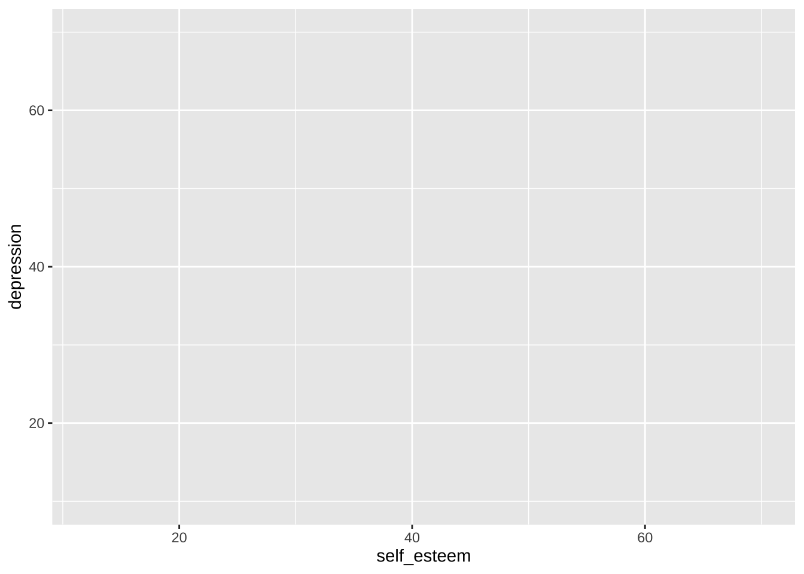
17.2.2 Geoms
Whereas data processing steps are combined with the pipe (%>%), ggplot layers are added with +.
We can add the geom geom_point() to the plot and print it again. geom_point() draws a point for each x-y pair in the data. The alpha argument sets the opacity of the points: setting it to 0.5 makes them partially transparent, which shows where points overlap.
p <- p + geom_point(alpha = 0.5) # make points partially transparent using alpha < 1
p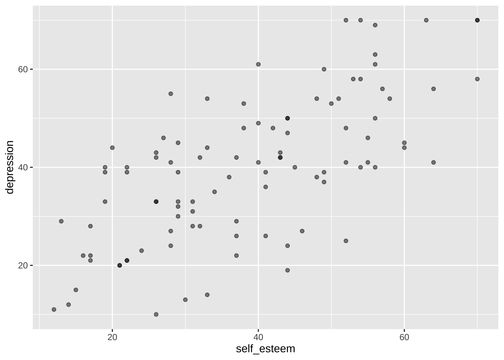
Behind the scenes, geom_point() is a shortcut for the more general layer() function:
p + layer(
geom = "point",
stat = "identity",
position = "identity"
)ggplot layers geoms on top of one another.
We can add a second layer with another geom, geom_smooth(). When method = "lm", geom_smooth() adds a linear regression line and its 95% confidence interval.
p <- p + geom_smooth(method = "lm") # linear regression line using lm()
p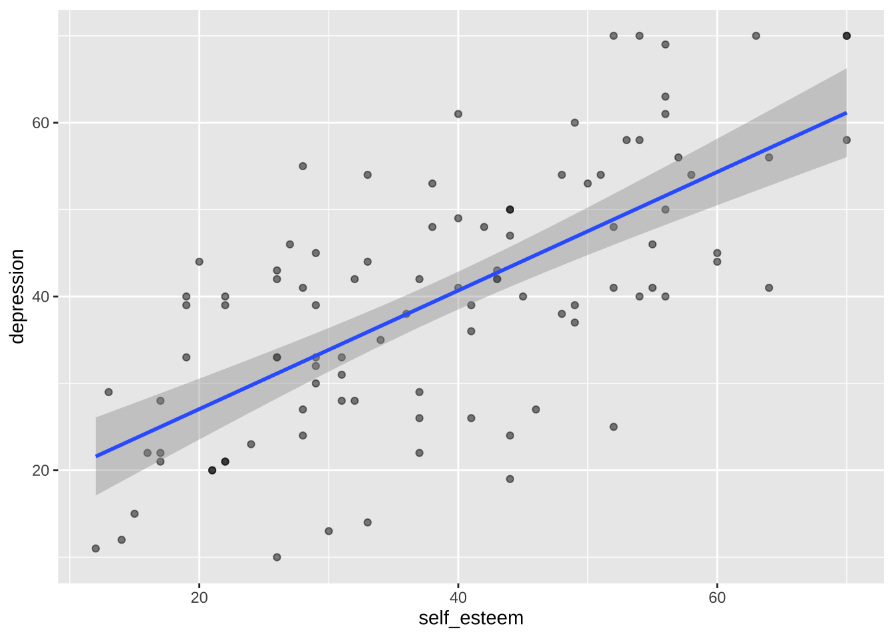
17.2.3 Axes
Axis names, ranges, and breaks (the values marked on each axis) can be controlled using functions such as scale_x_continuous() and scale_y_continuous(). breaks_pretty() from the {scales} package chooses a sensible set of roughly n breaks.
p <- p +
scale_x_continuous(breaks = breaks_pretty(n = 7), name = "Self-esteem") +
scale_y_continuous(breaks = breaks_pretty(n = 7), name = "Depression")
p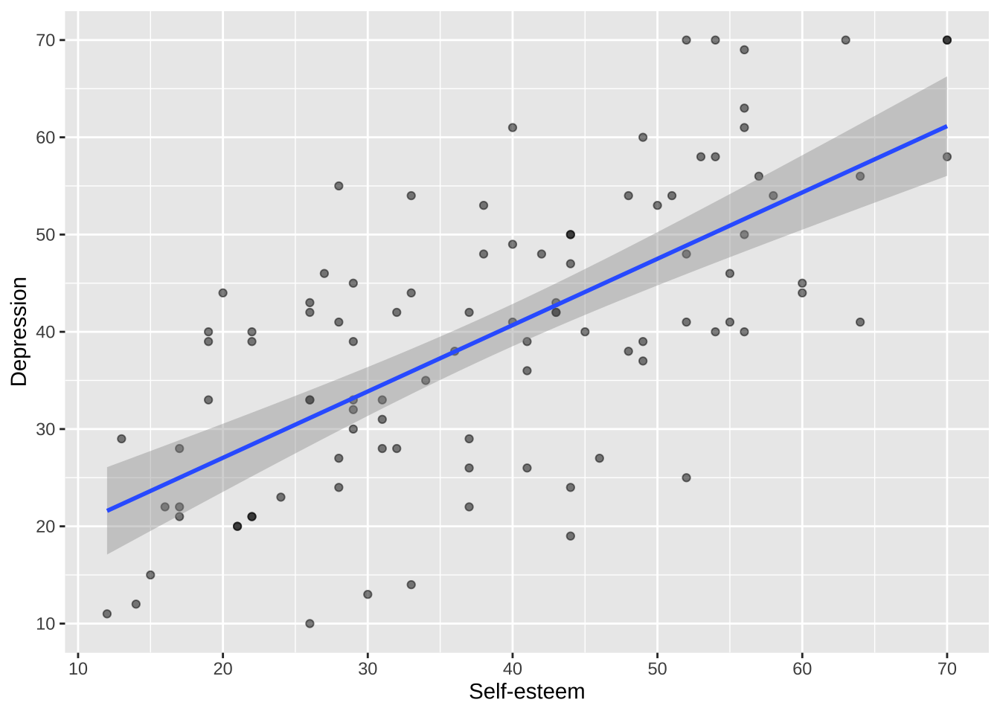
17.2.4 Labels
labs() sets the plot’s title, subtitle, and caption, as well as the names of the axes and legends. It is often simpler than setting the name in each scale_ function.
p <- p +
labs(title = "Self-esteem and depression",
subtitle = "Linear regression line with 95% confidence interval",
caption = "Data simulated using the {truffle} package")
p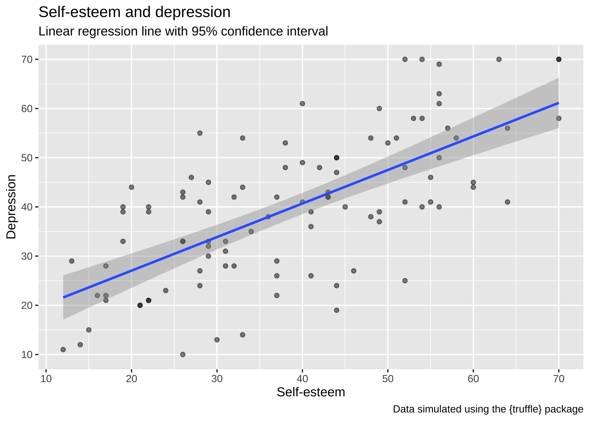
17.2.5 Legends
Legends are created automatically for every aesthetic that is mapped to a variable, e.g., color = gender. A few common adjustments:
- Position:
theme(legend.position = "bottom")moves the legend below the plot (“top”, “left”, “right”, or “inside” are also possible), andtheme(legend.position = "none")removes all legends. - Removing one legend:
guides(color = "none")removes only the legend for thecoloraesthetic. - Title: set it with
labs(), e.g.,labs(color = "Gender"). - Order: the entries are in the order of the factor’s levels, so change the order with {forcats} functions such as
fct_relevel()(see Ordering categories). Where possible, put the entries in the same order as the data in the plot, e.g., the order in which lines end.
ggplot(data = dat_likert, aes(x = self_esteem, y = depression, color = gender)) +
geom_point() +
labs(x = "Self-esteem",
y = "Depression",
color = "Gender") +
theme_classic() +
theme(legend.position = "bottom")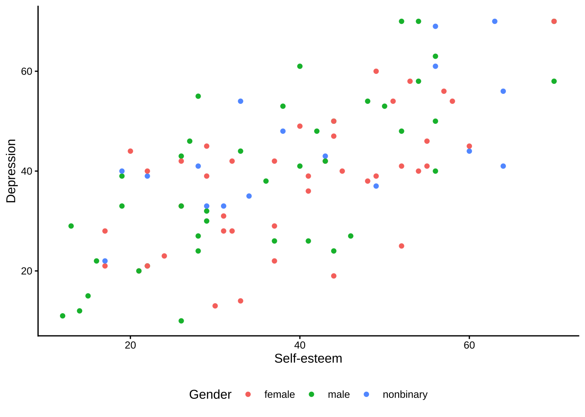
17.2.6 Themes
Themes control the appearance of all the parts of the plot that don’t display data, such as the background, grid lines, and fonts. There are several built-in themes, such as theme_minimal(), theme_classic(), and theme_linedraw().
p <- p + theme_linedraw()
p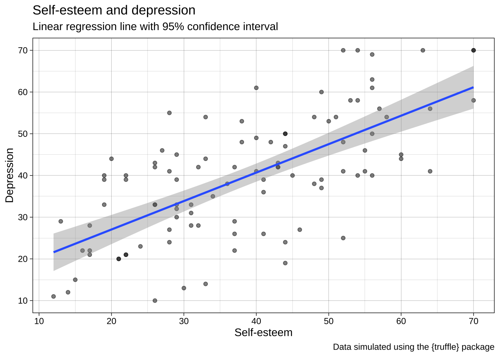
Individual elements of a theme can be adjusted with theme(), after the complete theme has been applied. For example, to make all the text larger and remove the minor grid lines:
p +
theme(text = element_text(size = 14),
panel.grid.minor = element_blank())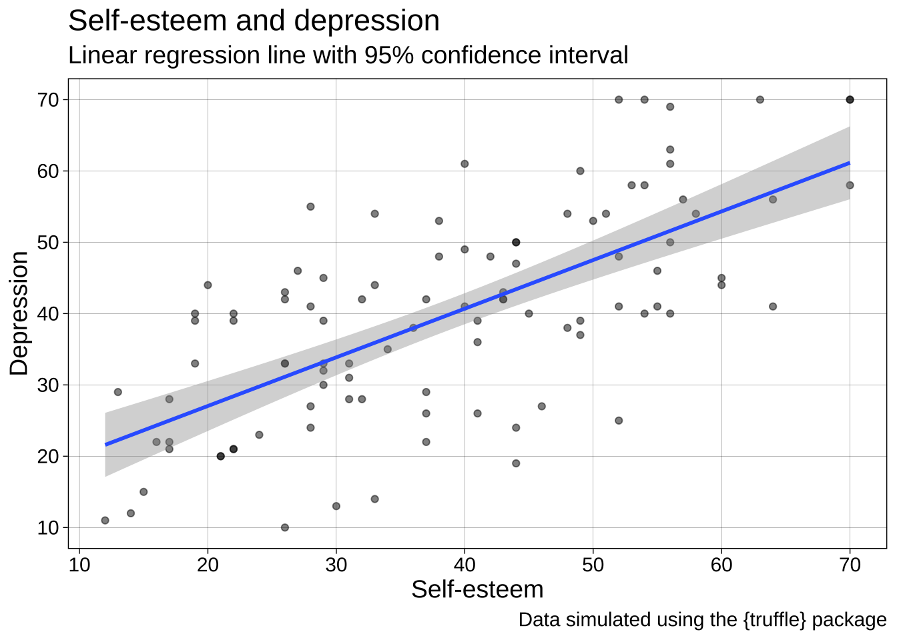
Rather than adding the same theme to every plot, theme_set() sets the default theme for all plots made after it, e.g., in the setup chunk at the top of a .qmd file. Individual plots can still override it.
theme_set(theme_classic())17.2.7 Combined
We can put all these layers together in one chunk:
ggplot(data = dat_likert, aes(x = self_esteem, y = depression)) +
geom_point(alpha = 0.5) +
geom_smooth(method = "lm") +
scale_x_continuous(breaks = breaks_pretty(n = 7)) +
scale_y_continuous(breaks = breaks_pretty(n = 7)) +
labs(title = "Self-esteem and depression",
x = "Self-esteem",
y = "Depression") +
theme_linedraw()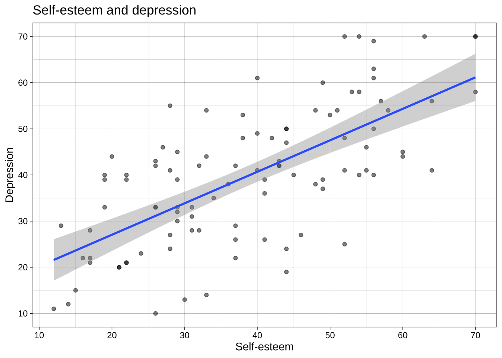
17.3 Colors
17.3.1 Individual colors
Colors can be chosen directly, using the names of the many colors that R knows, or hex codes (e.g., “#FF69B4”) from any online color picker.
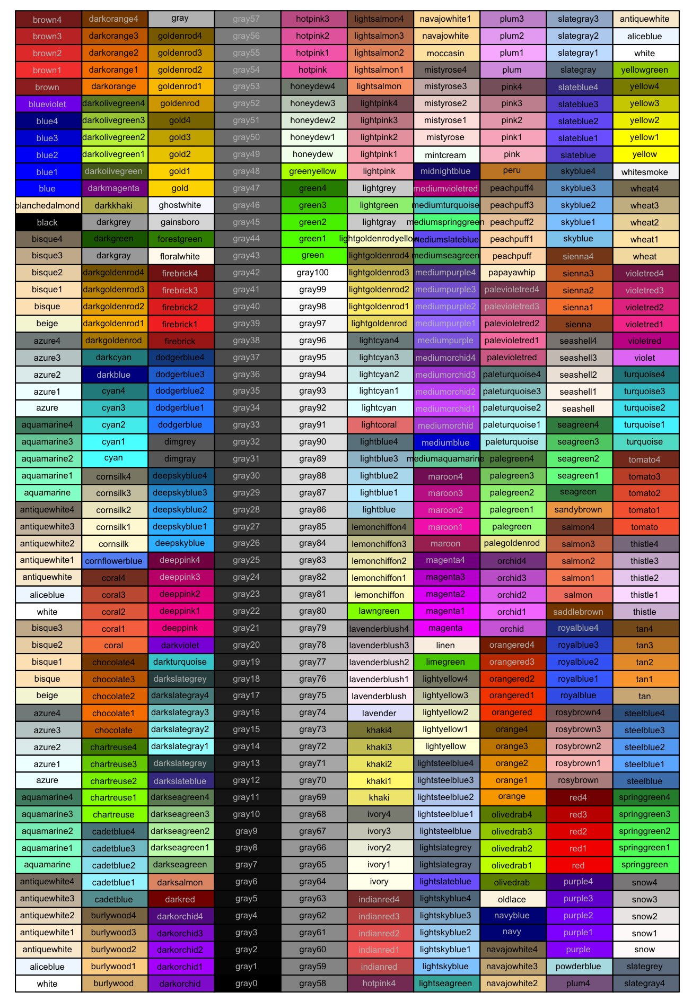
For example:
ggplot(data = dat_likert, aes(x = self_esteem, y = depression)) +
geom_point(alpha = 0.9, color = "seagreen4") +
geom_smooth(method = "lm", color = "maroon4") +
scale_x_continuous(breaks = breaks_pretty(n = 7), name = "Self-esteem") +
scale_y_continuous(breaks = breaks_pretty(n = 7), name = "Depression") +
theme_linedraw()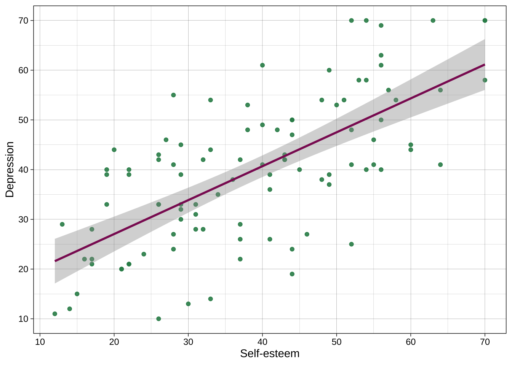
17.3.2 Color palettes
Many plots use multiple colors, e.g., one for each group. Entire palettes of colors exist, including those in the popular {RColorBrewer} package:
display.brewer.all()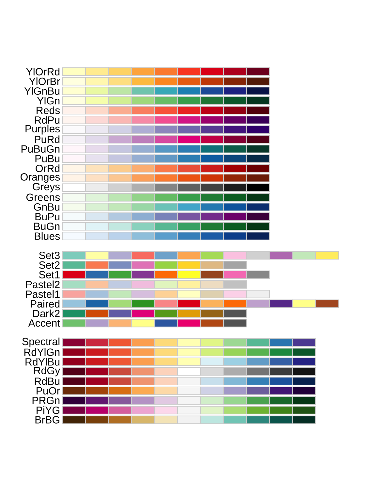
To color the points by group, add the grouping variable to aes(), and then choose the palette with a scale_color_ function:
ggplot(data = dat_likert,
aes(x = self_esteem,
y = depression,
color = gender)) + # add gender to the aesthetics call for color
geom_point(alpha = 0.9) +
geom_smooth(method = "lm", alpha = 0.2) +
scale_x_continuous(breaks = breaks_pretty(n = 7), name = "Self-esteem") +
scale_y_continuous(breaks = breaks_pretty(n = 7), name = "Depression") +
theme_linedraw() +
scale_color_brewer(palette = "Set2") # use brewer for the `color` aesthetic, where the mapped variable is discrete/categorical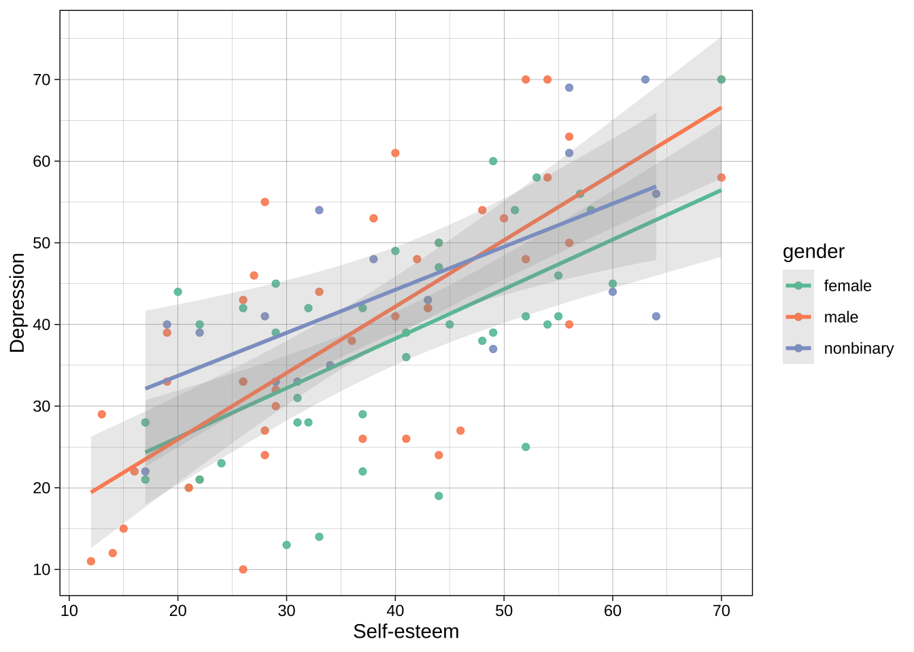
color sets the color of points and lines, whereas fill sets the color inside shapes such as bars, boxes, and density curves. Each has its own set of scale functions, e.g., scale_color_brewer() and scale_fill_brewer().
17.3.3 Palettes for color vision deficiency
The Principles of data visualization chapter explains why palettes such as viridis are a better choice than rainbow palettes or {ggplot2}’s default palette, and why color shouldn’t be the only way groups can be told apart. This section shows how to use them.
The viridis palettes are built into {ggplot2}. Use scale_color_viridis_c() (or scale_fill_viridis_c()) for continuous variables:
ggplot(data = dat_likert,
aes(x = self_esteem,
y = depression,
color = depression)) + # add depression to the aesthetics call for color
geom_point(alpha = 0.9) +
geom_smooth(method = "lm", color = "black") + # you can override the global color aesthetic for this geom
scale_x_continuous(breaks = breaks_pretty(n = 7), name = "Self-esteem") +
scale_y_continuous(breaks = breaks_pretty(n = 7), name = "Depression") +
theme_linedraw() +
scale_color_viridis_c(direction = -1) # use viridis_c for the `color` aesthetic, where the mapped variable is continuous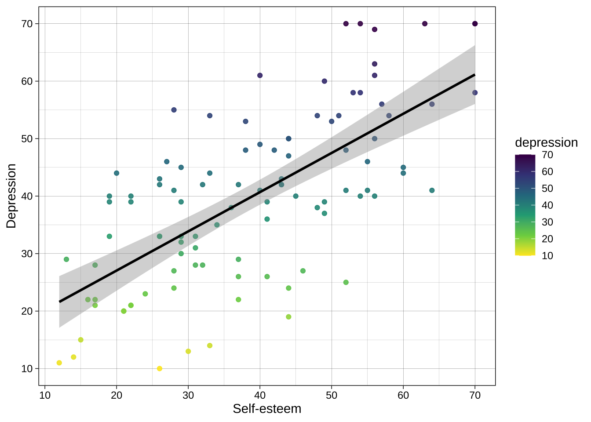
And scale_color_viridis_d() (or scale_fill_viridis_d()) for discrete variables. The option argument chooses one of the other palettes in the viridis family, e.g., “magma”, “plasma”, “cividis”, or “mako”:
ggplot(data = dat_likert,
aes(x = self_esteem,
y = depression,
color = gender)) + # add gender to the aesthetics call for color
geom_point(alpha = 0.9) +
geom_smooth(method = "lm", alpha = 0.2) +
scale_x_continuous(breaks = breaks_pretty(n = 7), name = "Self-esteem") +
scale_y_continuous(breaks = breaks_pretty(n = 7), name = "Depression") +
theme_linedraw() +
scale_color_viridis_d(option = "plasma", end = 0.8) # use viridis_d for the `color` aesthetic, where the mapped variable is discrete/categorical. end = 0.8 avoids the palette's lightest yellow, which is hard to see on white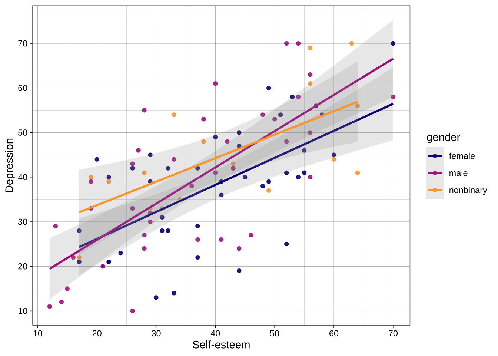
For unordered categories, the Okabe-Ito palette is a good alternative. Its colors are returned by base R’s palette.colors() function, and can be used with scale_color_manual(). Adding shape as well as color means the groups can still be told apart in black and white:
ggplot(data = dat_likert,
aes(x = self_esteem,
y = depression,
color = gender,
shape = gender)) + # map gender to both color and shape
geom_point(alpha = 0.9) +
geom_smooth(method = "lm", alpha = 0.2) +
scale_x_continuous(breaks = breaks_pretty(n = 7), name = "Self-esteem") +
scale_y_continuous(breaks = breaks_pretty(n = 7), name = "Depression") +
theme_linedraw() +
scale_color_manual(values = unname(palette.colors(palette = "Okabe-Ito")[2:4])) # the first Okabe-Ito color is black, so start from the second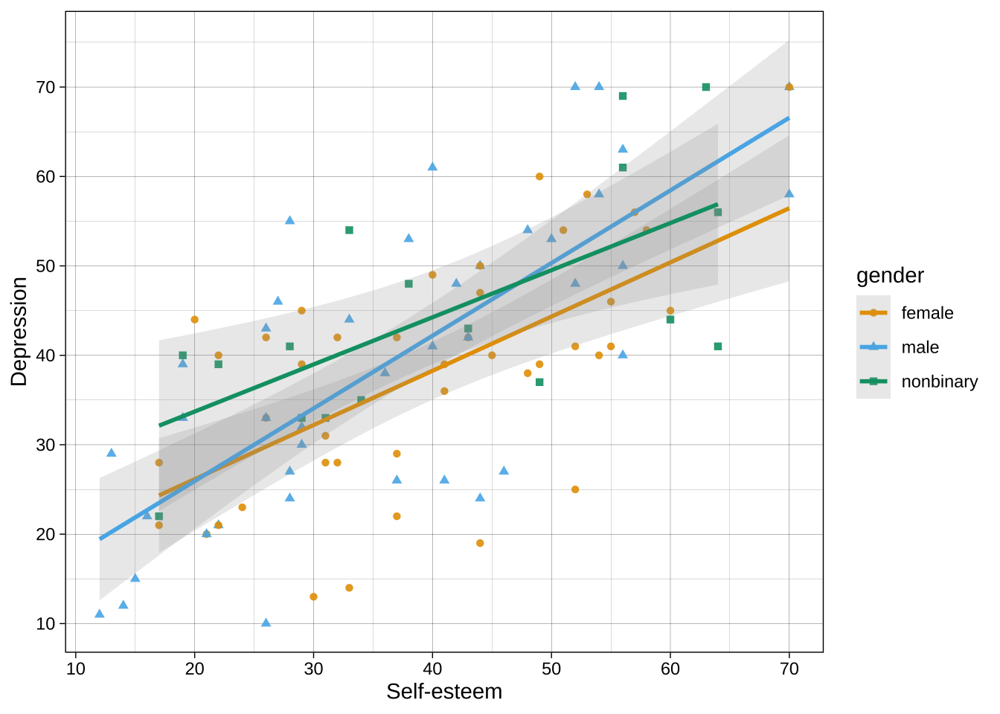
17.4 Axis scales and labels
17.4.1 Formatting axis labels
The labels argument of the scale_ functions controls how the values on an axis are displayed. The {scales} package has functions for the most common formats, e.g., label_percent() shows proportions as percentages, label_comma() adds commas to large numbers (e.g., 1,000), and label_dollar() adds currency symbols. label_wrap() wraps long category labels onto several lines, which is usually better than rotating them.
expansion() controls the space that is added at the ends of an axis. By default, {ggplot2} adds a little space, which leaves a gap between the bars and the axis. expansion(mult = c(0, 0.05)) removes the space at the bottom of the axis but keeps 5% at the top.
dat_reasons <- tibble(reason = c("To stay in touch with friends and family",
"For news and current events",
"Out of habit or boredom",
"To find entertainment",
"For work or study"),
proportion = c(.81, .46, .62, .55, .23))
ggplot(dat_reasons, aes(x = proportion, y = fct_reorder(reason, proportion))) +
geom_col() +
scale_x_continuous(labels = label_percent(), # show proportions as percentages
limits = c(0, 1),
expand = expansion(mult = c(0, 0.05))) + # no gap between the bars and the axis
scale_y_discrete(labels = label_wrap(20)) + # wrap labels after about 20 characters
labs(x = "Participants who use social media for this reason",
y = NULL) +
theme_classic()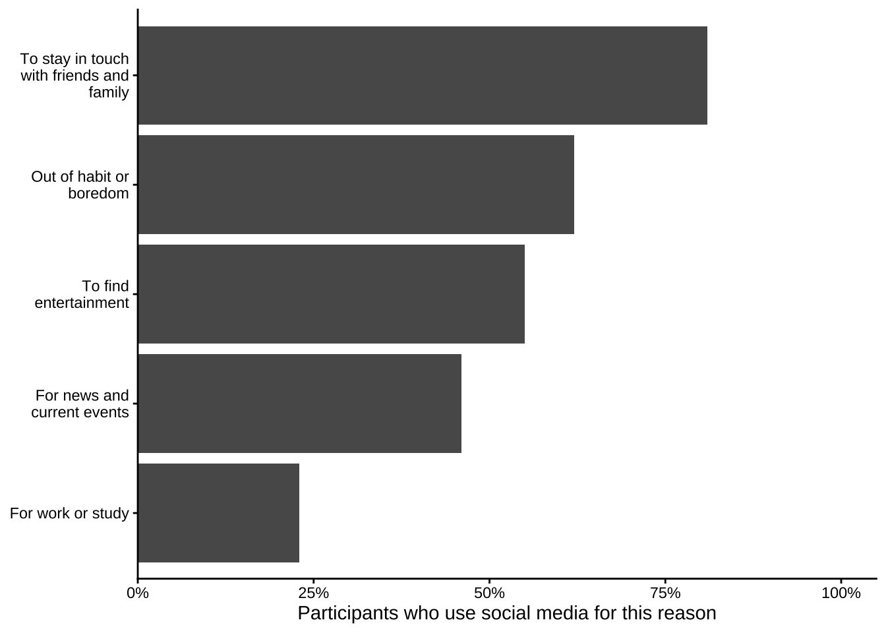
17.4.2 Logarithmic scales
Some variables, such as reaction times or income, are strongly skewed, with a long tail of large values. A logarithmic (log) scale spreads out the small values and compresses the large ones. scale_x_log10() and scale_y_log10() plot the data on a log scale while keeping the original values as the axis labels, which is easier to read than plotting the log of the values. Label log scales clearly, because readers assume axes are linear.
set.seed(42)
dat_rt <- tibble(rt = rlnorm(1000, meanlog = log(600), sdlog = 0.5))
plot_linear <- ggplot(dat_rt, aes(x = rt)) +
geom_histogram(bins = 40) +
scale_x_continuous(labels = label_comma()) +
labs(title = "Linear scale",
x = "Reaction time (ms)") +
theme_classic()
plot_log <- ggplot(dat_rt, aes(x = rt)) +
geom_histogram(bins = 40) +
scale_x_log10(labels = label_comma()) +
labs(title = "Log scale",
x = "Reaction time (ms, log scale)") +
theme_classic()
plot_linear + plot_log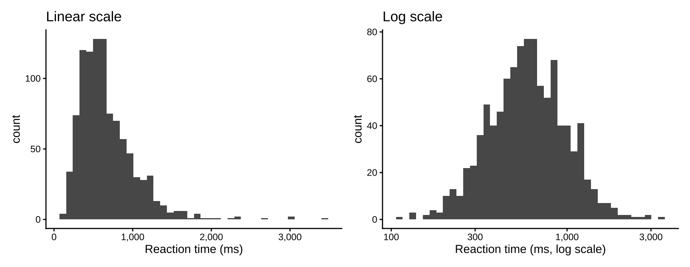
17.4.3 Coordinate systems
Coordinate functions change how the x and y positions are drawn, without changing the data:
coord_cartesian()zooms in or out without removing data (see Limits vs.coord_cartesian()).coord_flip()swaps the x and y axes. It is often simpler to map variables to the axes you want directly, e.g.,aes(x = value, y = category)for horizontal bars.coord_equal()makes one unit on the x axis the same length as one unit on the y axis, andcoord_fixed(ratio = )sets a different ratio. Use them when both axes show the same variable, or the same units, so that a 45° line means that the two are equal, as in Brinley plots below.
17.5 Plotting the distribution of one variable
17.5.1 Histograms using geom_histogram()
A histogram divides a continuous variable into bins and shows how many observations fall into each one.
ggplot(data = dat_amp, aes(x = mean_self_report)) +
geom_histogram(binwidth = 1)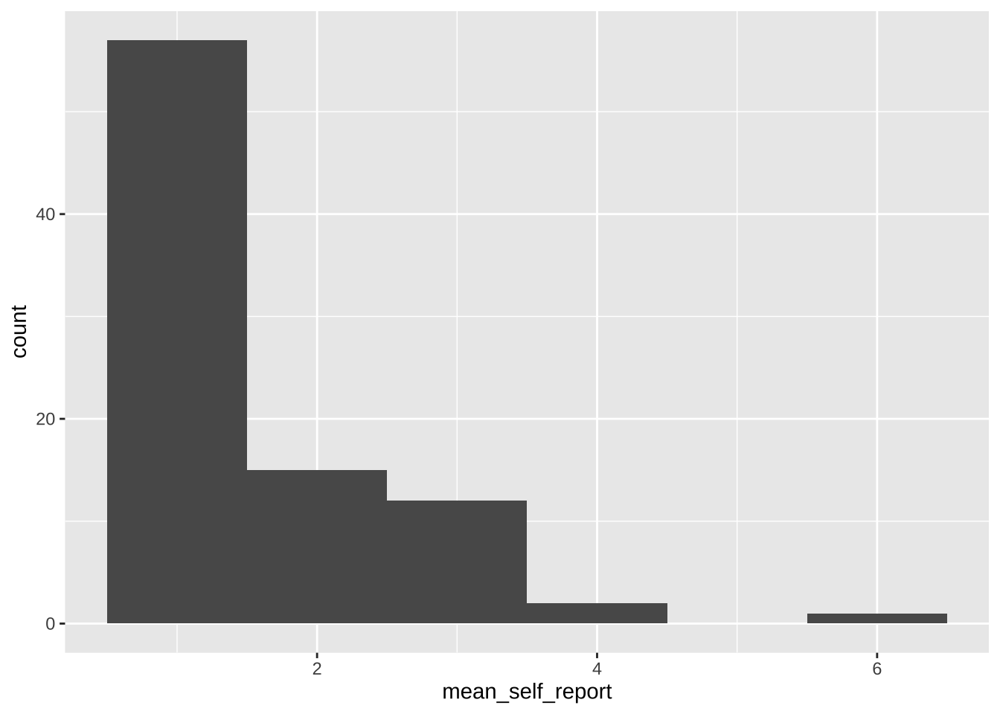
For a self-report scale that is scored 1 to 7, it makes sense to centre each bin on a whole number, by setting the bins’ boundary at 0.5:
ggplot(data = dat_amp, aes(x = mean_self_report)) +
# more intelligent choices for the binwidth and boundary
geom_histogram(binwidth = 1, boundary = 0.5) +
# labeling of the axis points
scale_x_continuous(breaks = breaks_pretty(n = 7),
limits = c(0.5, 7.5)) +
scale_y_continuous(breaks = breaks_pretty(n = 6)) +
labs(x = "Mean self-reported evaluation",
y = "Count") +
theme_linedraw()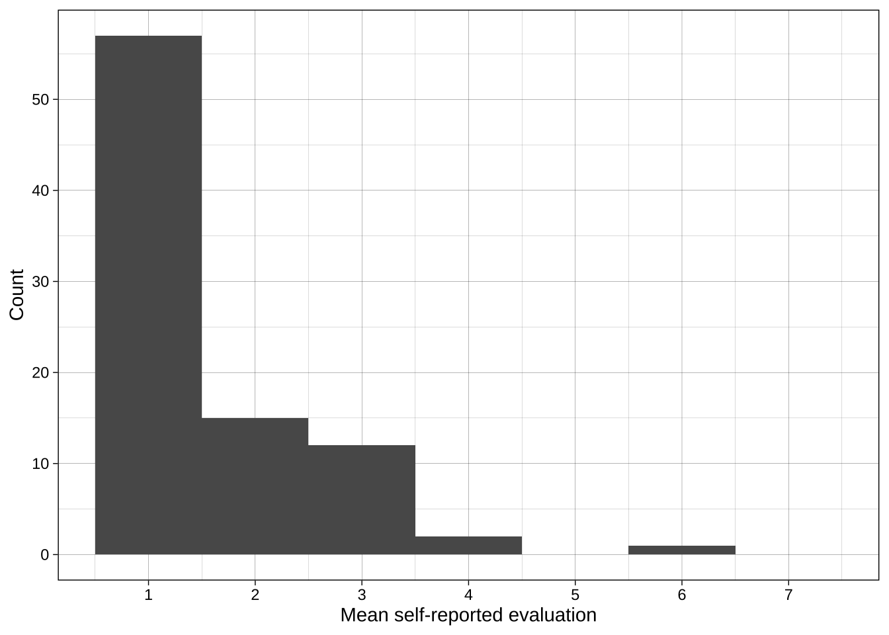
17.5.1.1 Bin width and boundary
With continuous variables, changing the boundary (where the bins start) and the bin width (or number of bins) can dramatically change the apparent distribution. No one setting is correct, as all are technically accurate, but some are more informative or misleading than others.
Boundary:
ggplot(data = dat_amp, aes(x = amp_score)) +
geom_histogram(binwidth = 0.1, boundary = 0) +
theme_linedraw()
ggplot(data = dat_amp, aes(x = amp_score)) +
geom_histogram(binwidth = 0.1, boundary = 0.05) +
theme_linedraw()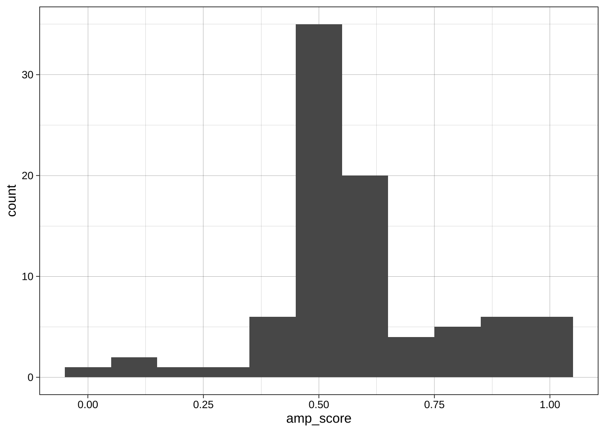
Bin width:
ggplot(data = dat_amp, aes(x = amp_score)) +
geom_histogram(binwidth = 0.01, boundary = 0) +
theme_linedraw()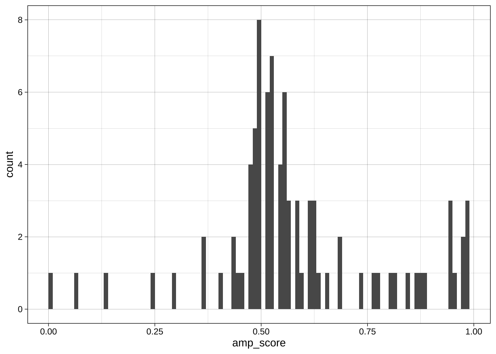
ggplot(data = dat_amp, aes(x = amp_score)) +
geom_histogram(binwidth = 0.1, boundary = 0) +
theme_linedraw()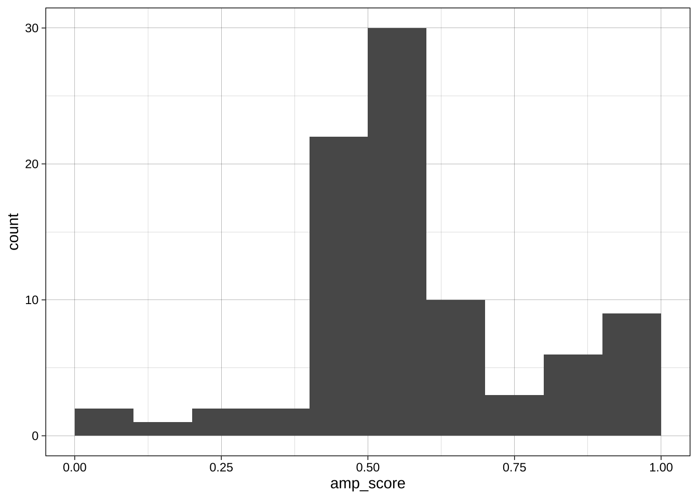
ggplot(data = dat_amp, aes(x = amp_score)) +
geom_histogram(binwidth = 0.25, boundary = 0) +
theme_linedraw()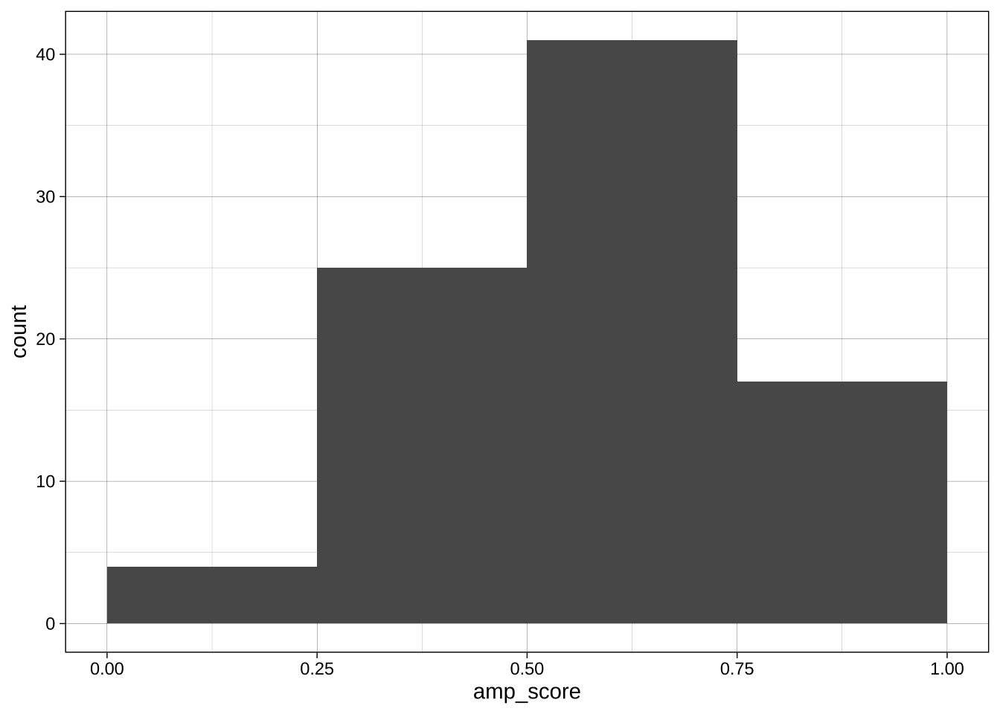
17.5.1.2 Exercise
Create a histogram of the ‘age’ variable in dat_amp_processed (i.e., before exclusions). Choose a sensible bin width, and name the axes clearly.
NoteClick to show answer
ggplot(data = dat_amp_processed, aes(x = age)) +
geom_histogram(binwidth = 5, boundary = 0) +
scale_x_continuous(breaks = breaks_pretty(n = 8)) +
labs(x = "Age (years)",
y = "Count") +
theme_linedraw()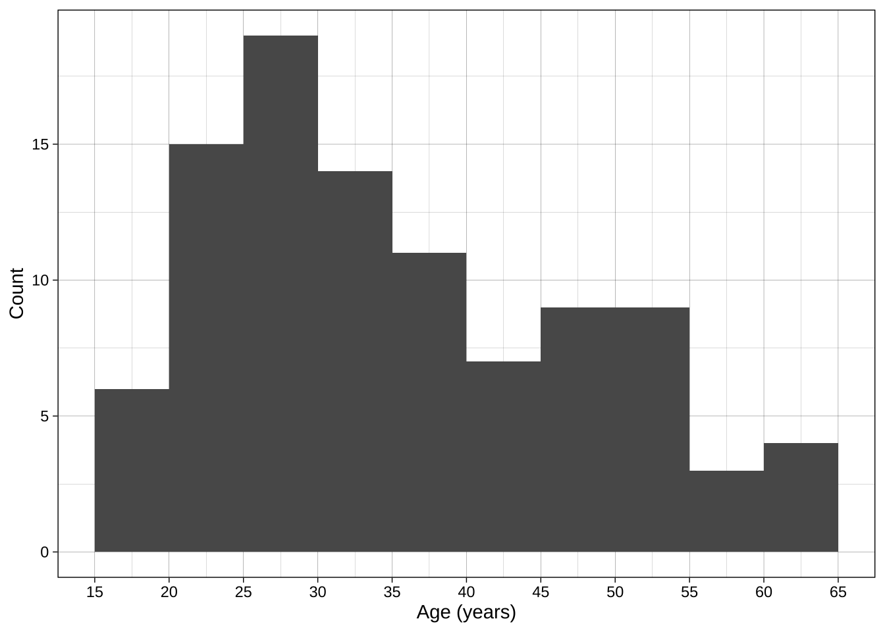
ggplot() warns that it removed rows containing non-finite values: these are the participants whose age is NA.
17.5.2 Density plots using geom_density()
A density plot is a smoothed version of a histogram. The adjust argument controls how much it is smoothed.
ggplot(data = dat_amp, aes(x = mean_self_report)) +
geom_density(adjust = 1, # the degree of smoothing can be adjusted here
color = "#FF69B4",
fill = "darkblue",
alpha = 0.3)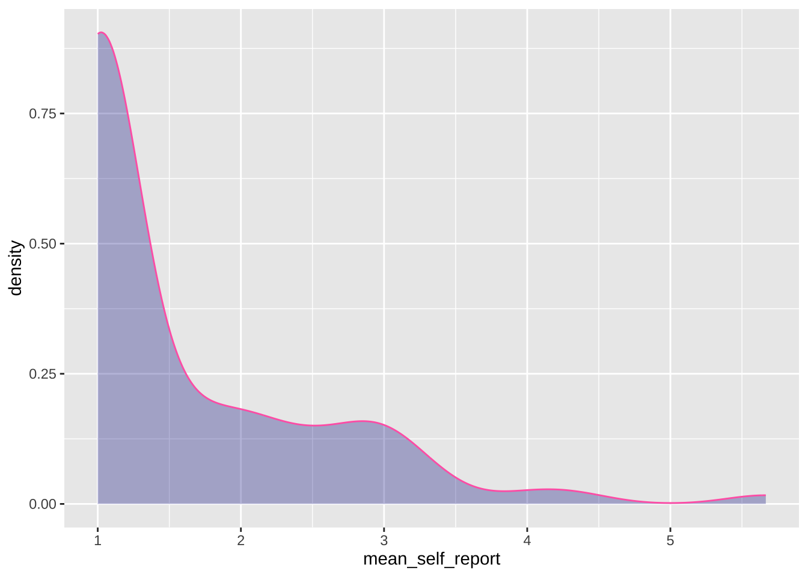
Density plots are useful for comparing the distributions of several groups in one plot, by mapping the group to fill:
ggplot(data = dat_amp, aes(x = amp_score, fill = gender)) +
geom_density(alpha = 0.5) +
scale_fill_viridis_d(begin = 0.2, end = 0.8) +
labs(x = "AMP score",
y = "Density",
fill = "Gender") +
theme_linedraw()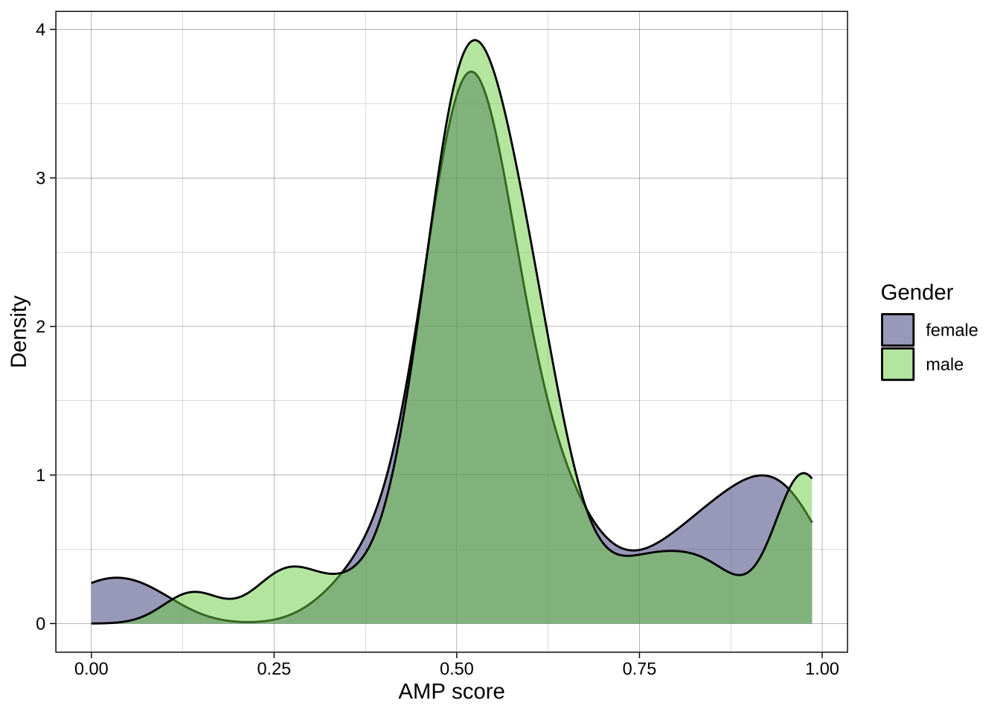
17.5.2.1 Exercise
Make a density plot of the AMP scores in dat_amp that:
- Uses a theme.
- Uses colors of your choice.
- Has prettier x axis breaks.
- Names both axes more clearly.
NoteClick to show answer
ggplot(data = dat_amp, aes(x = amp_score)) +
geom_density(color = "darkorange",
fill = "darkorange",
alpha = 0.3) +
scale_x_continuous(breaks = breaks_pretty(n = 10)) +
labs(x = "AMP score (proportion of prime-congruent trials)",
y = "Density") +
theme_classic()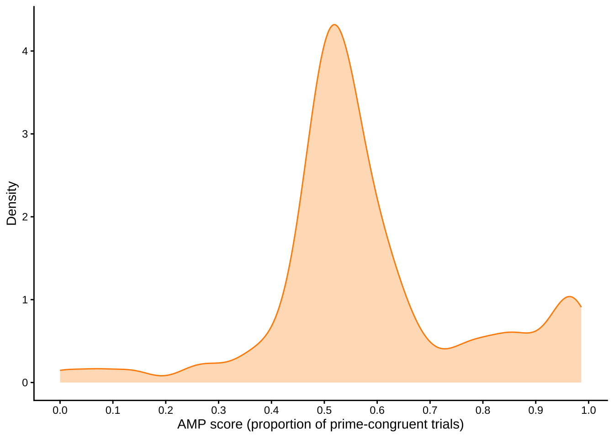
17.5.3 Counts of a categorical variable using geom_bar()
geom_bar() counts the number of rows in each category and draws a bar for each. It needs only an x aesthetic: the height of the bars is calculated for you.
ggplot(data = dat_amp_processed, aes(x = gender)) +
geom_bar() +
labs(x = "Gender",
y = "Count") +
theme_linedraw()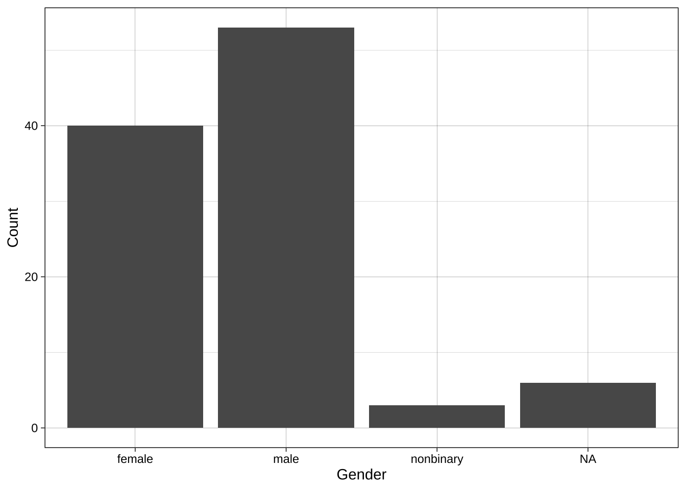
17.5.4 Ordering categories
By default, categories are plotted in alphabetical order (with NA last), which is rarely the most useful order. As you learned in the Strings and factors chapter, the order is controlled by the levels of a factor. {forcats} functions can change the order directly in the aes() call, e.g., fct_infreq() orders the categories from most to least common:
ggplot(data = dat_amp_processed, aes(x = fct_infreq(gender))) +
geom_bar() +
labs(x = "Gender",
y = "Count") +
theme_linedraw()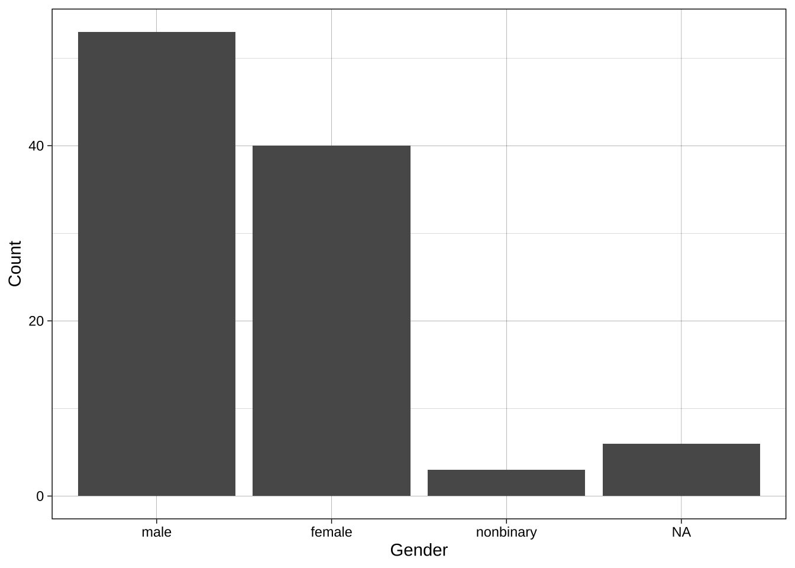
fct_relevel() sets the order by hand, as we did for the ‘timepoint’ variable when loading dat_empathy, and fct_reorder() orders the categories by the values of another variable, e.g., by each group’s mean.
17.6 Plotting differences between groups
17.6.1 Means and confidence intervals using stat_summary()
Often we want to plot each group’s mean and its 95% confidence interval. stat_summary() calculates summary statistics from the raw data and plots them using a geom of your choice. mean_cl_normal calculates the mean and its 95% confidence interval (it requires the {Hmisc} package to be installed).
ggplot(data = dat_amp, aes(x = gender, y = amp_score)) +
stat_summary(fun = mean,
geom = "point") +
stat_summary(fun.data = mean_cl_normal, # mean and 95% confidence interval
geom = "linerange") +
labs(title = "Means and their 95% CIs",
x = "Gender",
y = "Mean AMP score") +
theme_linedraw()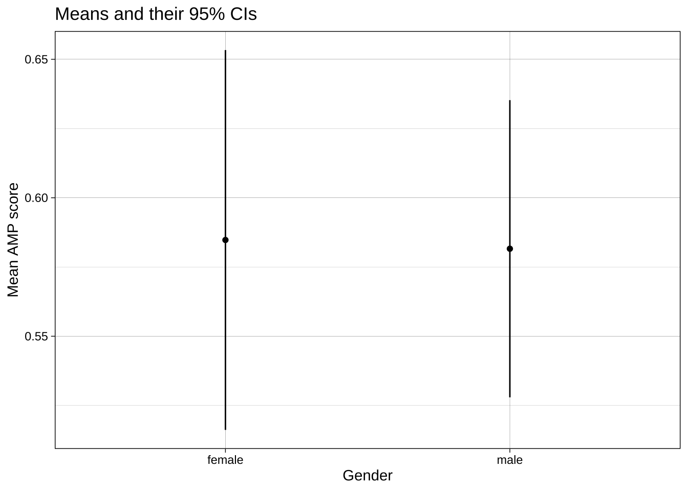
17.6.2 Bar plots of means
Bar plots of means are very common, but they are a poor way to display continuous data. They hide the distribution of the data and the sample size, and the bar implies that the data starts at zero and fills the whole bar, which is often not the case (Weissgerber et al., 2015) (see the Principles of data visualization chapter). They are sometimes unavoidable, e.g., when a journal or supervisor insists, so here’s how to make them.
The summary statistics can either be calculated before plotting:
# create the summary values to be plotted
summary_amp <- dat_amp %>%
group_by(gender) %>%
summarize(amp_mean = mean(amp_score),
amp_se = sd(amp_score) / sqrt(n())) # standard error of the mean
# plot these values
ggplot(data = summary_amp, aes(x = gender, y = amp_mean)) +
geom_col() + # equivalent to `geom_bar(stat = "identity")`
geom_errorbar(aes(ymin = amp_mean - amp_se * 1.96, # mean ± SE * 1.96 = 95% confidence interval
ymax = amp_mean + amp_se * 1.96),
width = 0.2) +
theme_linedraw()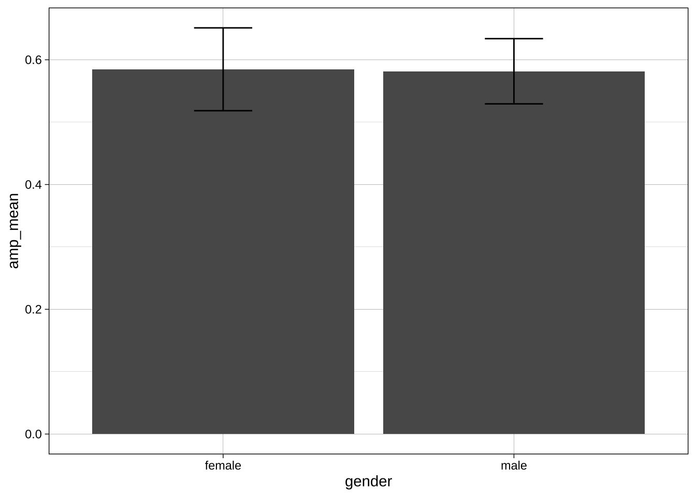
Or inside the ggplot call, using stat_summary():
ggplot(data = dat_amp, aes(x = gender, y = amp_score)) +
stat_summary(fun = mean,
geom = "bar") +
stat_summary(fun.data = mean_cl_normal, # mean and 95% confidence interval
geom = "errorbar",
width = 0.2) +
labs(title = "Means and their 95% CIs",
x = "Gender",
y = "Mean AMP score") +
theme_linedraw()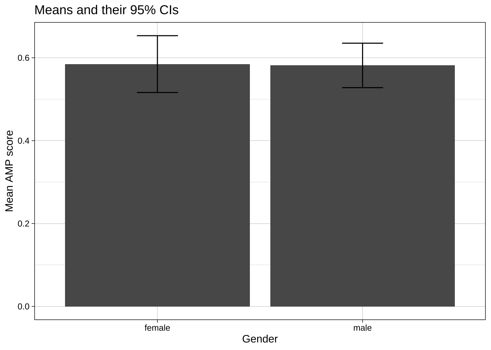
Notice that geom_col() plots values that are already in the data, whereas geom_bar() counts rows, unless you tell it otherwise.
17.6.2.1 Exercise
Make a plot of the means and 95% confidence intervals of the self-report scores (mean_self_report) in dat_amp for each gender, using points rather than bars:
- Use
coord_flip()to swap the x and y axes. - Add a theme.
- Change the size and shape of the points.
- Name both axes more clearly.
NoteClick to show answer
ggplot(data = dat_amp, aes(x = gender, y = mean_self_report)) +
stat_summary(fun = mean,
geom = "point",
size = 3,
shape = 15) + # 15 is a filled square
stat_summary(fun.data = mean_cl_normal,
geom = "linerange") +
labs(x = "Gender",
y = "Mean self-reported evaluation") +
coord_flip() +
theme_minimal()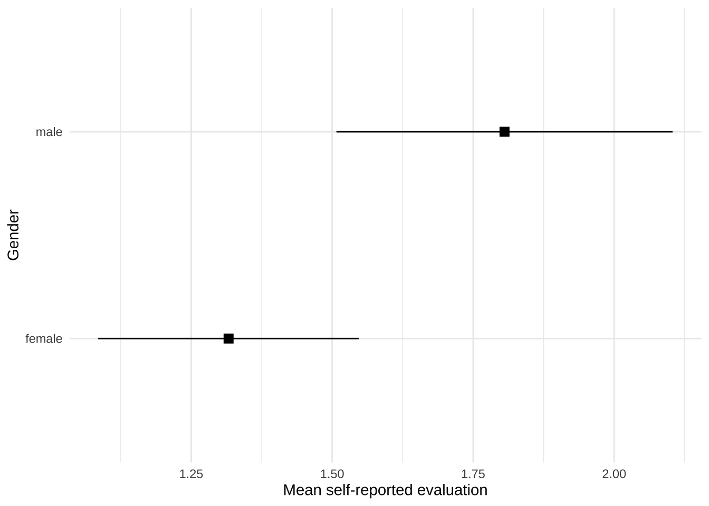
17.6.2.2 Exercise
The genders are labelled ‘female’ and ‘male’ in the plots above. How could you capitalize them to ‘Female’ and ‘Male’? You could change the data before plotting, or change the labels in the plot. Do both below.
NoteClick to show answer
Change the data before plotting:
dat_amp %>%
mutate(gender = str_to_title(gender)) %>%
ggplot(aes(x = gender, y = amp_score)) +
stat_summary(fun = mean,
geom = "point") +
stat_summary(fun.data = mean_cl_normal,
geom = "linerange") +
labs(x = "Gender",
y = "Mean AMP score") +
theme_linedraw()
Change the labels in the plot, using the labels argument of the scale for the x axis:
ggplot(data = dat_amp, aes(x = gender, y = amp_score)) +
stat_summary(fun = mean,
geom = "point") +
stat_summary(fun.data = mean_cl_normal,
geom = "linerange") +
scale_x_discrete(labels = c("female" = "Female",
"male" = "Male")) +
labs(x = "Gender",
y = "Mean AMP score") +
theme_linedraw()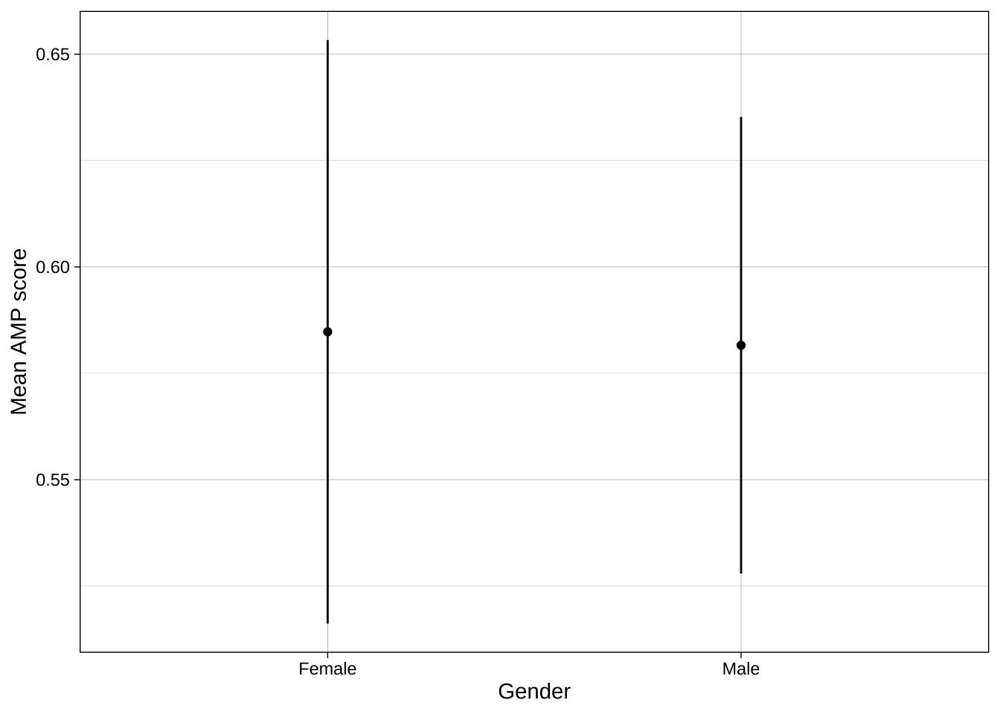
Both work. Wrangling the data first is often simpler, especially if the same labels are used in several plots. Changing the labels in the plot leaves the data unchanged.
17.6.3 Box plots and violin plots
Box plots and violin plots show the distribution of the data in each group, not just its mean. A box plot shows the median (the line), the middle 50% of the data (the box), the range of most of the rest of the data (the whiskers), and any outliers (points). A violin plot shows a density plot of each group, mirrored on both sides.
ggplot(data = dat_amp, aes(x = gender, y = amp_score)) +
geom_boxplot(width = 0.5) +
labs(x = "Gender",
y = "AMP score") +
theme_linedraw()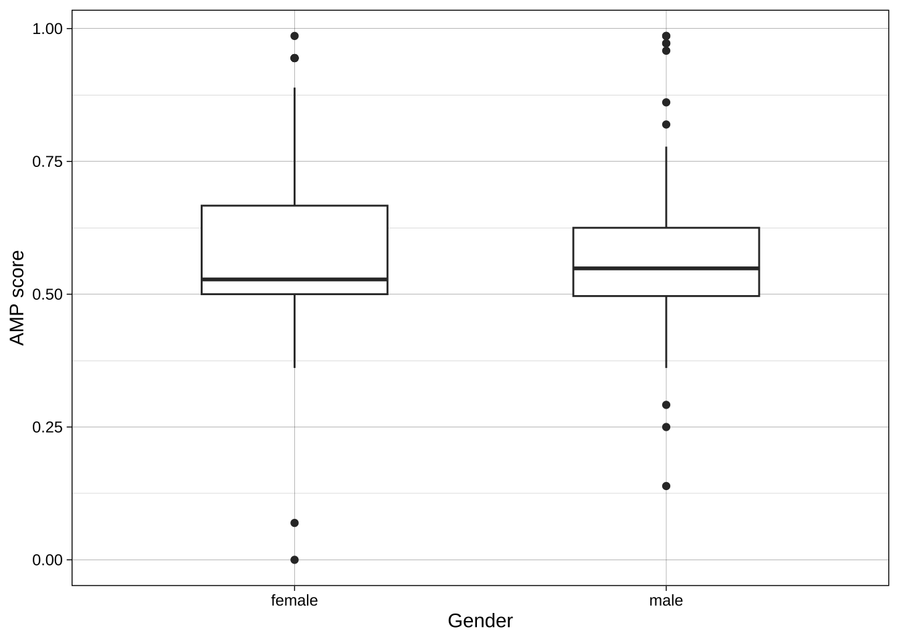
ggplot(data = dat_amp, aes(x = gender, y = amp_score)) +
geom_violin() +
labs(x = "Gender",
y = "AMP score") +
theme_linedraw()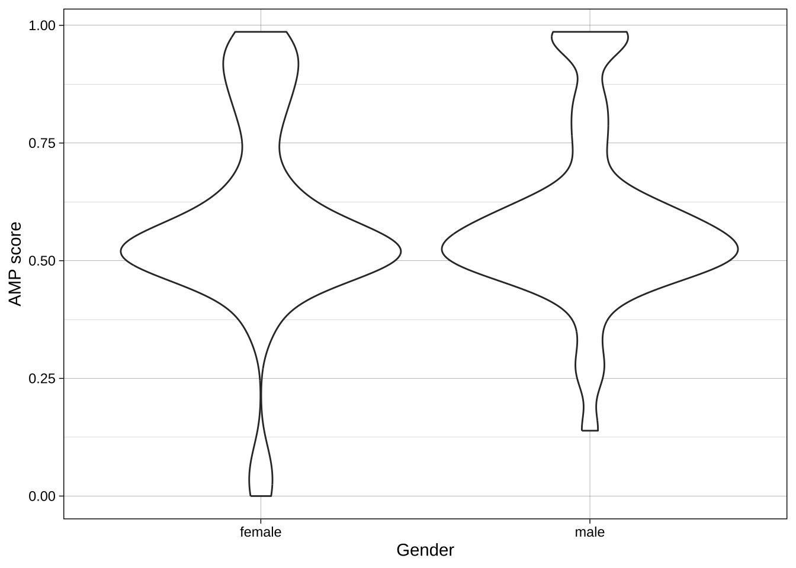
17.6.4 Showing the raw data
Plots are more informative when they also show the raw data points, so that readers can see the sample size and the shape of the data. With a categorical x axis, many points overlap. geom_jitter() moves each point a small random amount to reduce this. Set height = 0, so that the points are only moved horizontally and their values on the y axis aren’t changed.
ggplot(data = dat_amp, aes(x = gender, y = amp_score)) +
geom_violin() +
geom_boxplot(width = 0.2, outlier.shape = NA) + # hide the outliers, because all the points are plotted
geom_jitter(width = 0.1, height = 0, alpha = 0.4) +
labs(x = "Gender",
y = "AMP score") +
theme_linedraw()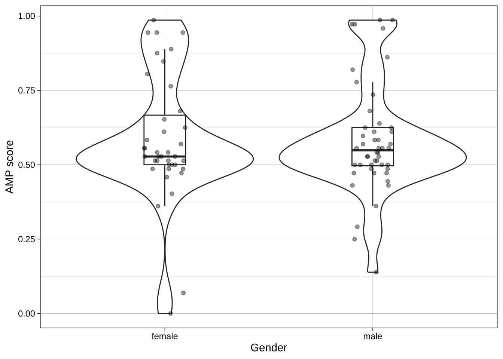
position_nudge() moves a layer by a fixed amount. It is useful for placing a summary next to the raw data rather than on top of it, so that neither hides the other:
ggplot(data = dat_amp, aes(x = gender, y = amp_score)) +
geom_jitter(width = 0.1, height = 0, alpha = 0.4) +
stat_summary(fun.data = mean_cl_normal,
geom = "pointrange",
color = "#D55E00",
position = position_nudge(x = 0.25)) + # move the means 0.25 units to the right
labs(x = "Gender",
y = "AMP score (mean and 95% CI to the right)") +
theme_classic()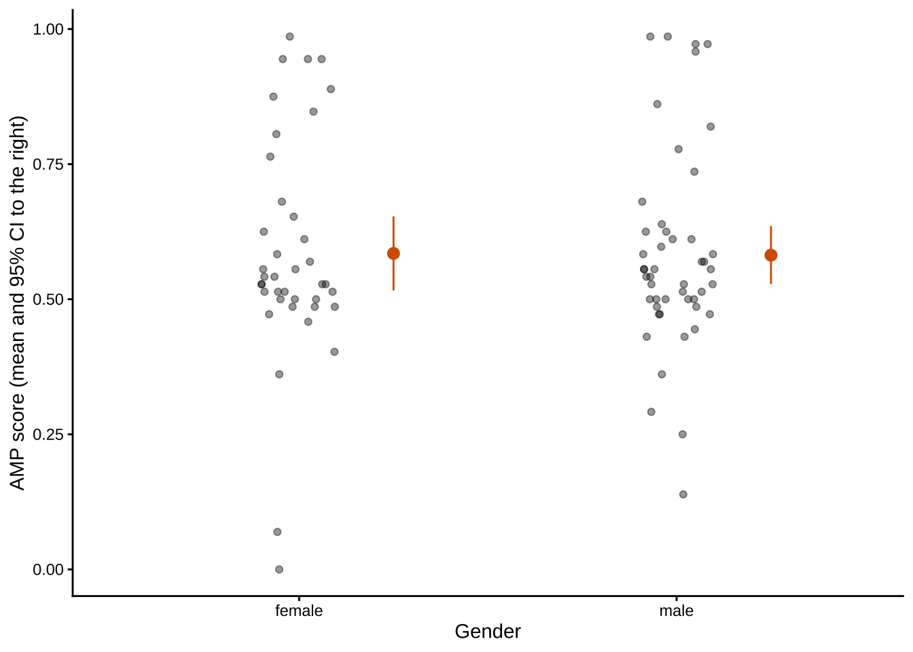
17.6.5 Raincloud plots
Raincloud plots combine several of these elements: a density plot (the cloud), the raw data (the rain), and a summary such as a box plot or the mean and its 95% confidence interval (Allen et al., 2021). The choice of plot is not merely an aesthetic preference: research on how people read plots suggests that plots that show the distribution and raw data convey information more accurately than bar plots (Franconeri et al., 2021; Weissgerber et al., 2015).
The geom_rain() function from the {ggrain} package makes raincloud plots. With repeated measures data, the id.long.var argument connects each participant’s data points across time points.
ggplot(dat_empathy, aes(x = timepoint, y = score, fill = timepoint)) +
geom_rain(rain.side = "f1x1",
id.long.var = "unique_id",
line.args = list(alpha = 0.1),
point.args = list(alpha = 0.5),
violin.args = list(alpha = 0.5),
# completely hide the boxplot
boxplot.args = list(outlier.shape = NA,
colour = NA,
fill = NA,
alpha = 0,
linewidth = 0)) +
stat_summary(fun = mean,
geom = "point",
size = 3,
color = "darkred") +
stat_summary(fun.data = mean_cl_normal,
geom = "linerange",
linewidth = 1,
color = "darkred") +
scale_y_continuous(breaks = breaks_pretty(n = 6)) +
scale_fill_manual(values = c("dodgerblue", "darkorange")) + # custom fill colors
guides(fill = "none") + # suppress legend
labs(title = "Interpersonal Reactivity Index",
x = "Time point",
y = "Score") +
theme_linedraw()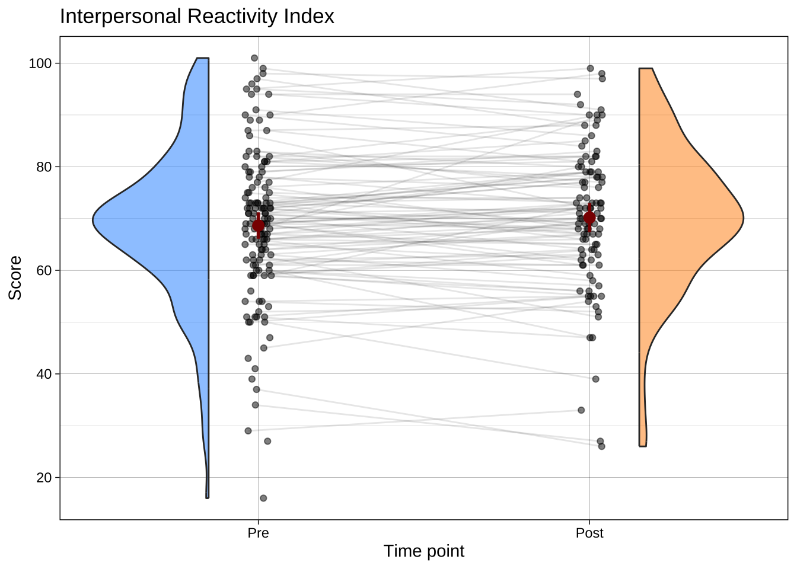
Several other packages can make raincloud plots, or plots like them. The {ggdist} package, for example, has flexible geoms for plotting distributions, including half-violin plots (stat_halfeye()) and dot plots (stat_dots()), which can be combined into raincloud plots (see its raincloud plot example). The {see} package, part of {easystats}, has geom_violinhalf(). Allen and colleagues’ raincloud plots tutorial also shows how to make them with {ggplot2} alone.
ggplot(dat_empathy, aes(x = timepoint, y = score, fill = timepoint)) +
stat_halfeye(adjust = 0.8, # smoothing of the density
width = 0.6,
justification = -0.2, # move the density away from the boxplot
.width = 0, # don't show an interval
point_colour = NA) + # don't show a point
geom_boxplot(width = 0.12, outlier.shape = NA, alpha = 0.5) +
stat_dots(side = "left", justification = 1.12, binwidth = 1) +
scale_fill_manual(values = c("dodgerblue", "darkorange")) +
guides(fill = "none") +
coord_flip() +
labs(x = "Time point",
y = "Interpersonal Reactivity Index score") +
theme_classic()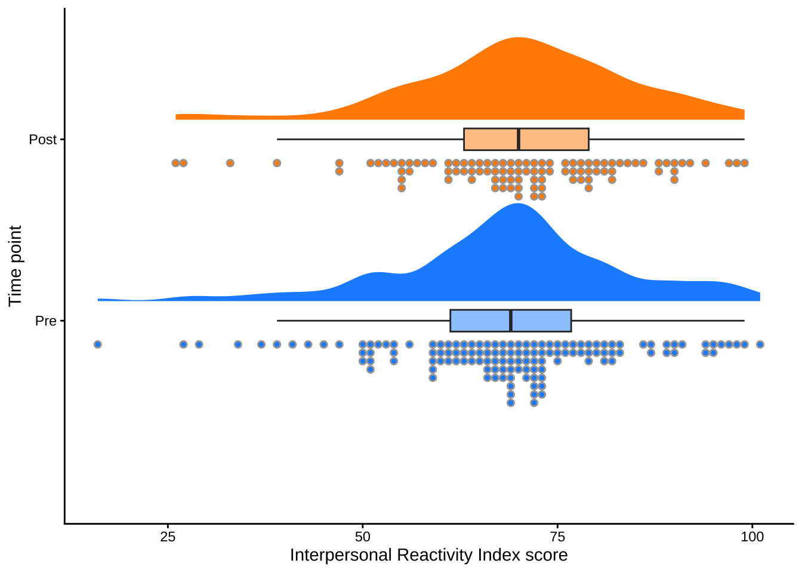
17.6.6 Interaction plots
Studies with two or more factors are often analyzed for interactions, i.e., whether the difference between the levels of one factor depends on the level of another. An interaction plot shows the mean of each combination of the factors, with the levels of one factor on the x axis, the levels of the other in different colors, and lines connecting the means of each color. Parallel lines suggest no interaction, and lines that diverge or cross suggest an interaction.
position_dodge() moves the groups apart so that their error bars don’t overlap. Use the same dodge width for every layer, so that the lines connect the points. Saving it as an object helps:
dodge <- position_dodge(width = 0.3)
ggplot(dat_amp, aes(x = age_group, y = amp_score, color = gender, group = gender)) +
stat_summary(fun = mean, geom = "line", position = dodge) +
stat_summary(fun.data = mean_cl_normal, geom = "pointrange", position = dodge) +
scale_color_manual(values = c(female = "#E69F00", male = "#0072B2")) +
labs(x = "Age group",
y = "Mean AMP score (95% CI)",
color = "Gender") +
theme_classic()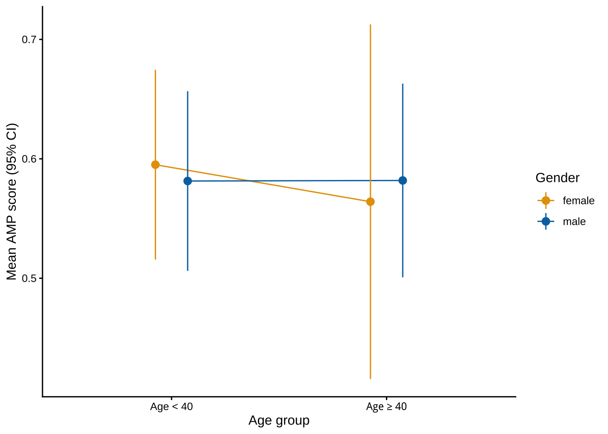
To add the raw data to an interaction plot, the points need to be both dodged, to line up with their group, and jittered, to reduce overlap. geom_jitter() can’t do both, but position_jitterdodge() can. Its dodge.width should match the dodge width of the other layers:
ggplot(dat_amp, aes(x = age_group, y = amp_score, color = gender, group = gender)) +
geom_point(position = position_jitterdodge(jitter.width = 0.15,
jitter.height = 0,
dodge.width = 0.6),
alpha = 0.3) +
stat_summary(fun = mean, geom = "line", position = position_dodge(width = 0.6)) +
stat_summary(fun.data = mean_cl_normal, geom = "pointrange", position = position_dodge(width = 0.6)) +
scale_color_manual(values = c(female = "#E69F00", male = "#0072B2")) +
labs(x = "Age group",
y = "AMP score (points: individual participants; \nlines: means and 95% CIs)",
color = "Gender") +
theme_classic()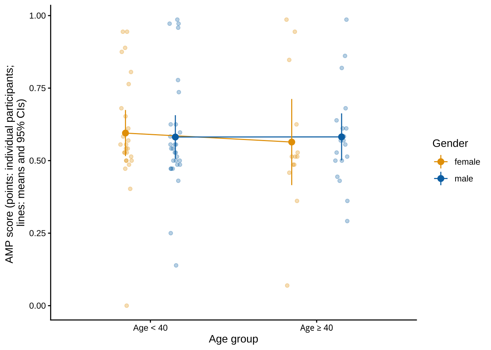
17.7 Plotting relationships between variables
17.7.1 Scatter plots and regression lines
Scatter plots, using geom_point(), show the relationship between two continuous variables, as in the examples in the Structure of a ggplot section. geom_smooth(method = "lm") adds a linear regression line.
When many participants have the same values, e.g., on a self-report scale with few response options, their points are plotted on top of each other. This is called overplotting, and it hides how much data there is. Making the points partially transparent (alpha) or jittering them can help:
ggplot(data = dat_amp, aes(x = mean_self_report, y = amp_score)) +
geom_point() +
labs(title = "Overplotted",
x = "Self-reported evaluation",
y = "AMP score") +
theme_linedraw()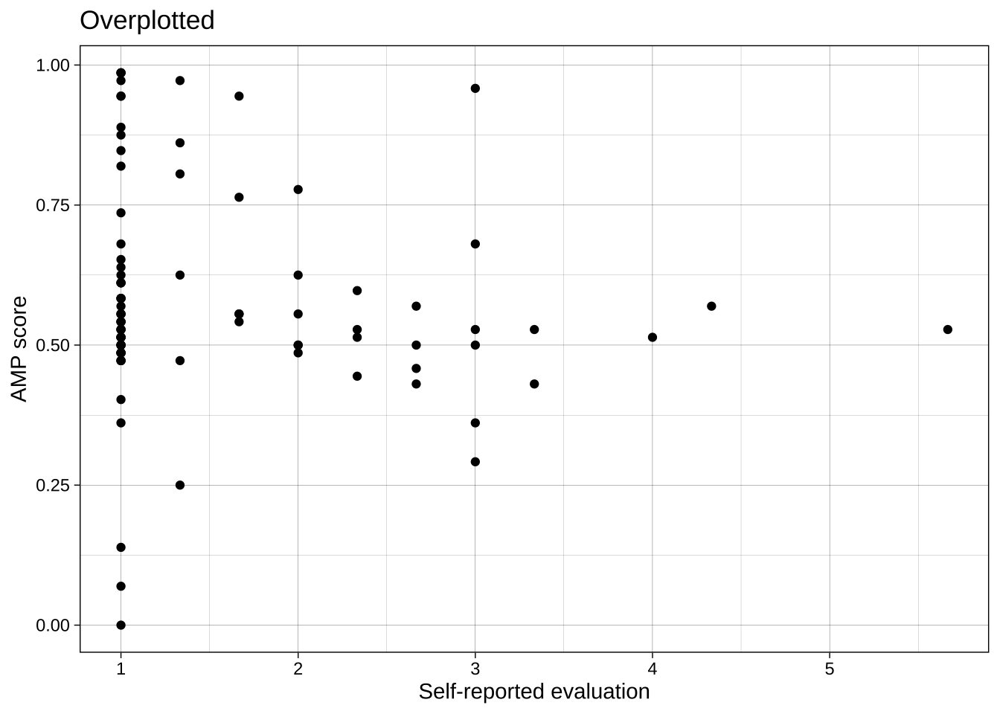
ggplot(data = dat_amp, aes(x = mean_self_report, y = amp_score)) +
geom_jitter(width = 0.1, height = 0, alpha = 0.5) +
labs(title = "Jittered and transparent",
x = "Self-reported evaluation",
y = "AMP score") +
theme_linedraw()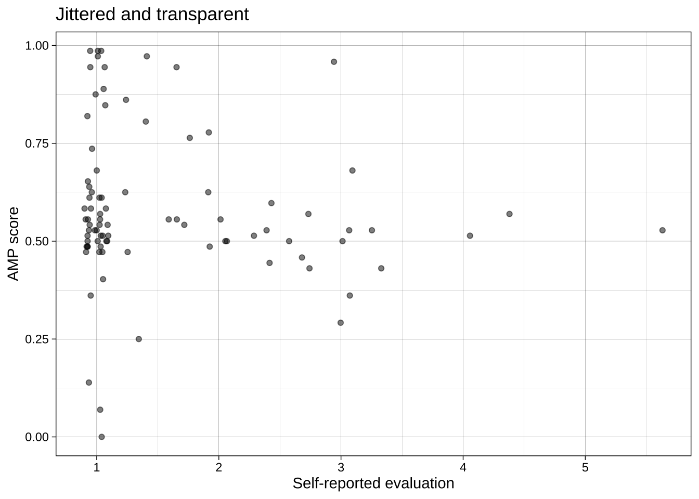
17.7.2 Paired data: Brinley plots
Paired data, e.g., each participant’s scores before and after an intervention, are often plotted as two bars or two box plots, which hides how each participant changed. Plotting each participant’s score at one time point against their score at the other shows both the individual and the overall change. These plots are known as Brinley plots, after Brinley (1965), who used them to compare older and younger adults’ reaction times, and modified versions are useful for showing change in clinical studies (Blampied, 2017). Wilke recommends them for paired data (Paired data).
A diagonal line, with a slope of 1 and an intercept of 0, shows where participants would be if their scores didn’t change. Points above the line increased, points below it decreased, and points on it didn’t change. coord_equal() and identical axis limits make sure that the line is at 45°, so that the distance above or below it can be read the same way everywhere. The data needs one row per participant, with a column for each time point (wide data).
The example below uses simulated wellbeing scores (0 to 100) before and after an intervention. On average, wellbeing increased, as the large cross, which marks the means, shows. But the plot also shows what the means alone would hide: most participants improved, by very different amounts, some didn’t change at all, and a few got worse.
set.seed(42)
dat_prepost <- tibble(id = 1:80,
pre = round(rnorm(80, mean = 50, sd = 13)),
# 55 participants who improved, 15 who didn't change, and 10 who got worse
change = c(round(rnorm(55, mean = 14, sd = 7)),
rep(0, 15),
round(rnorm(10, mean = -8, sd = 4)))) %>%
mutate(post = pre + change,
across(c(pre, post), ~ pmin(pmax(.x, 0), 100)), # keep scores within the 0-100 scale
change = case_when(post > pre ~ "Increased",
post < pre ~ "Decreased",
post == pre ~ "No change"),
change = factor(change, levels = c("Increased", "No change", "Decreased")))
dat_prepost_means <- dat_prepost %>%
summarize(pre = mean(pre),
post = mean(post))
ggplot(dat_prepost, aes(x = pre, y = post)) +
geom_abline(intercept = 0, slope = 1, linetype = "dashed") + # no change line
geom_point(aes(color = change), alpha = 0.7, size = 2) +
geom_point(data = dat_prepost_means, shape = 4, size = 6, stroke = 2) + # the means, as a large cross
annotate(geom = "text", x = 5, y = 95, label = "Increased", hjust = 0, color = "#0072B2") +
annotate(geom = "text", x = 95, y = 5, label = "Decreased", hjust = 1, color = "#D55E00") +
scale_color_manual(values = c(Increased = "#0072B2", Decreased = "#D55E00", `No change` = "grey40")) +
scale_x_continuous(limits = c(0, 100)) +
scale_y_continuous(limits = c(0, 100)) + # the same limits on both axes
coord_equal() + # one unit is the same length on both axes
labs(x = "Wellbeing before the intervention (pre)",
y = "Wellbeing after the intervention (post)",
color = NULL) +
theme_classic() +
theme(legend.position = "bottom")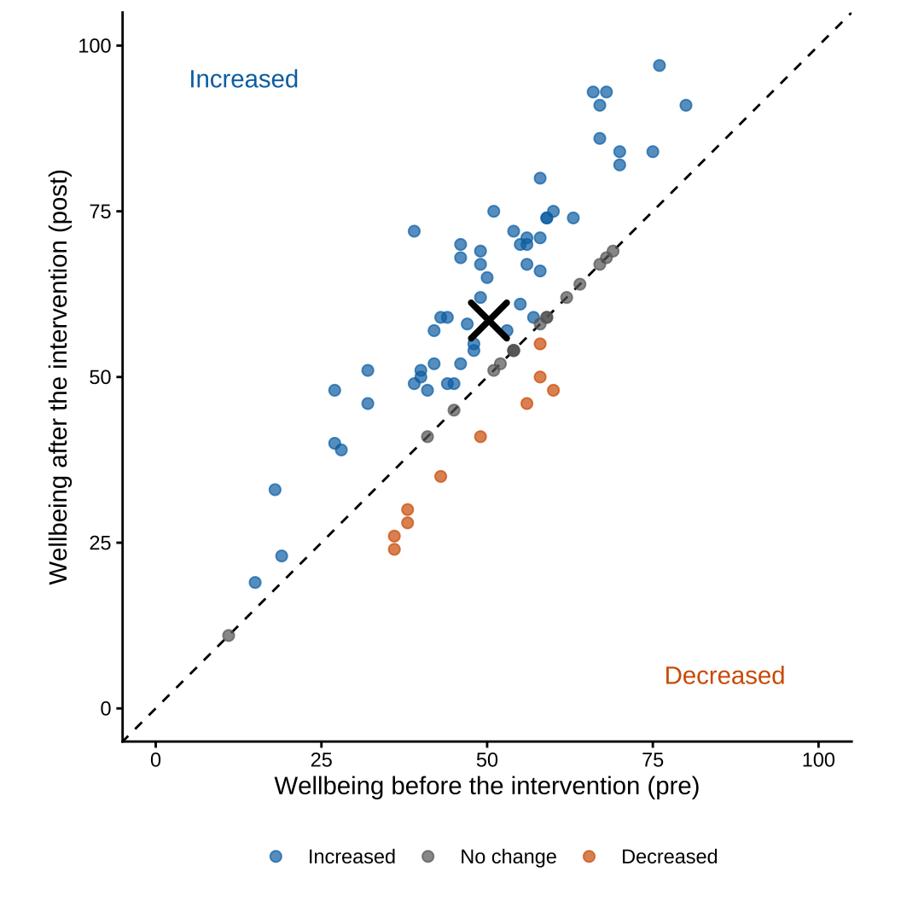
If your data is in long format, with one row per participant per time point, use pivot_wider() to reshape it first (see the Reshaping and pivots chapter).
17.7.3 Correlation heatmaps
A heatmap shows a matrix of values as a grid of colored tiles, using geom_tile(). It is a common way to show the correlations between many variables, e.g., the items of a questionnaire. Use a diverging palette that is centered on zero, so that positive and negative correlations have different colors and correlations near zero are pale (see the Principles of data visualization chapter). Adding the values as text makes them easy to read precisely.
The data needs to be in long format, with one row per pair of variables:
# simulate item-level data for two scales
dat_items <-
truffle_likert(study_design = "crosssectional",
n_items = c(6, 6),
alpha = c(.85, .85),
r_among_outcomes = -0.5,
n_per_condition = 200,
n_levels = c(7, 7),
prefixes = c("depression_item", "selfesteem_item"),
seed = 42) %>%
select(starts_with("depression"), starts_with("selfesteem"))
# correlation matrix, in long format
dat_correlations <- cor(dat_items) %>%
as.data.frame() %>%
rownames_to_column(var = "item1") %>%
pivot_longer(cols = -item1,
names_to = "item2",
values_to = "r") %>%
mutate(item1 = fct_inorder(item1),
item2 = fct_rev(fct_inorder(item2)), # so the first item is at the top
# format the correlations without leading zeros, e.g., ".45" and "-.20"
r_label = sub("^(-?)0\\.", "\\1.", sprintf("%.2f", round_half_up(r, digits = 2))))
ggplot(dat_correlations, aes(x = item1, y = item2, fill = r)) +
geom_tile(color = "white") +
geom_text(aes(label = r_label), size = 2.5) +
scale_fill_distiller(palette = "RdBu",
limits = c(-1, 1), # center the palette on zero
direction = 1) +
coord_fixed() + # square tiles
labs(x = NULL,
y = NULL,
fill = "Correlation") +
theme_minimal() +
theme(axis.text.x = element_text(angle = 45, hjust = 1),
panel.grid = element_blank())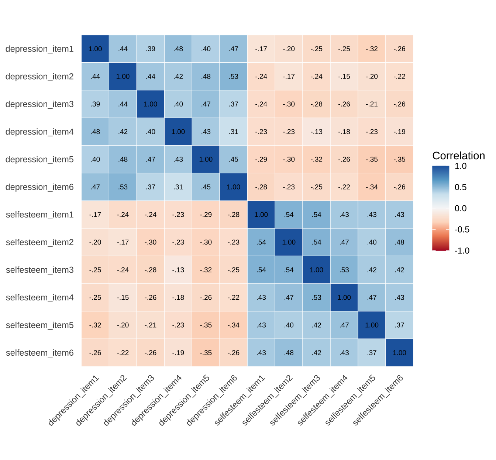
Here, the items of each scale correlate positively with each other, and negatively with the items of the other scale.
17.7.4 Reference lines and annotations
geom_hline(), geom_vline(), and geom_abline() add horizontal, vertical, and diagonal reference lines, e.g., to show the scale’s midpoint or a value of no effect. annotate() adds a single piece of text or a shape at the coordinates you give it.
ggplot(data = dat_amp, aes(x = mean_self_report, y = amp_score)) +
geom_hline(yintercept = 0.5, linetype = "dashed") +
annotate(geom = "text",
x = 6,
y = 0.44,
label = "No AMP effect") +
geom_jitter(width = 0.1, height = 0, alpha = 0.5) +
scale_x_continuous(breaks = 1:7) +
coord_cartesian(xlim = c(1, 7)) +
labs(x = "Self-reported evaluation",
y = "AMP score") +
theme_linedraw()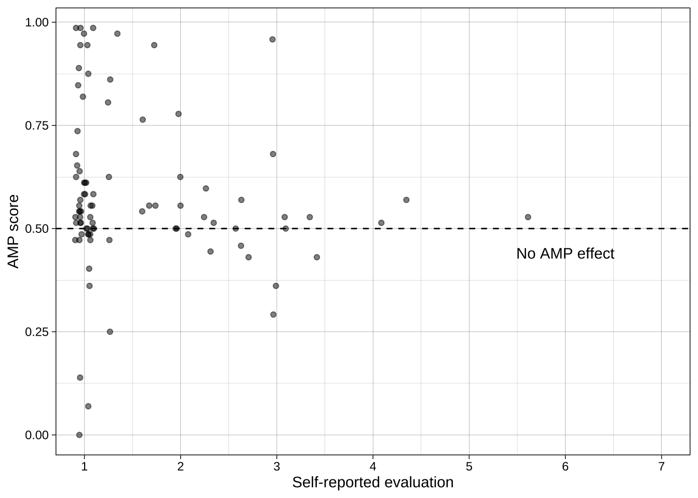
The order of the layers matters: later layers are drawn on top of earlier ones. The reference line is added before the points so that it is drawn behind them.
annotate() can also add shapes, e.g., annotate(geom = "rect", ...) adds a shaded rectangle to mark a region of the plot, such as a period of time or the range of an effect that is too small to matter.
17.7.5 Text labels
geom_text() and geom_label() (text in a box) add text from a column in the data, using the label aesthetic, e.g., to label each point or bar with its value. When labels overlap, the {ggrepel} package’s geom_text_repel() and geom_label_repel() move them apart, and draw lines to the points they belong to:
dat_likert_means <- dat_likert %>%
group_by(gender) %>%
summarize(depression = mean(depression),
self_esteem = mean(self_esteem))
ggplot(dat_likert, aes(x = self_esteem, y = depression)) +
geom_point(alpha = 0.3) +
geom_point(data = dat_likert_means, aes(color = gender), size = 4) +
geom_label_repel(data = dat_likert_means,
aes(label = gender, color = gender),
min.segment.length = 0, # always draw a line to the point
box.padding = 1) +
guides(color = "none") +
labs(x = "Self-esteem",
y = "Depression") +
theme_classic()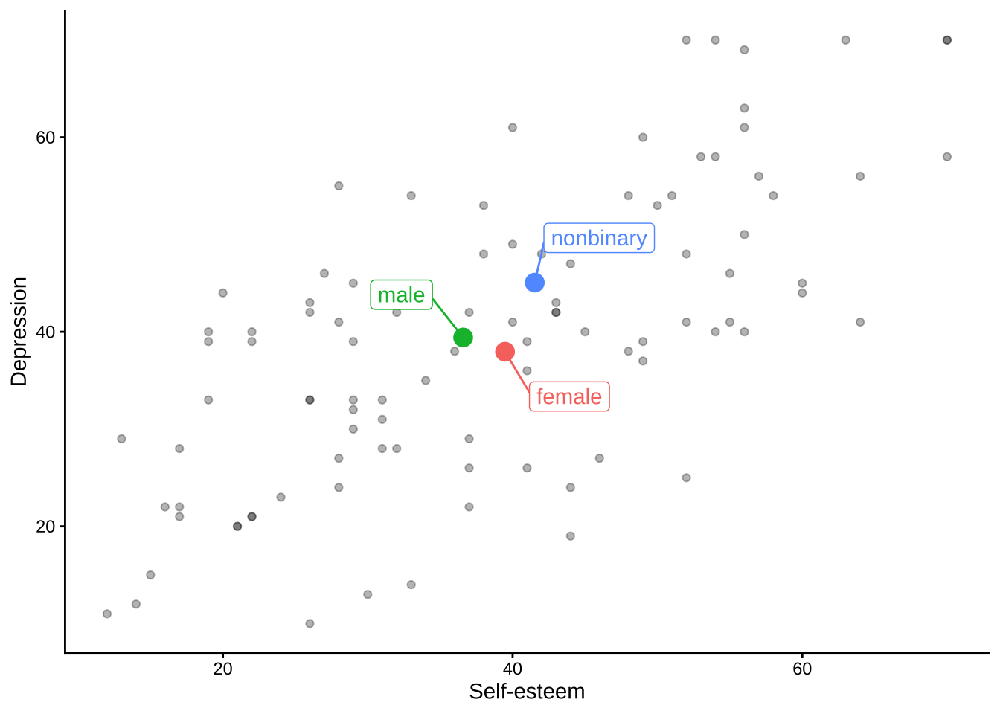
Text labels can also replace a legend, by labeling each line at its end (see the Principles of data visualization chapter). Filter the data to the last x value, add the labels with geom_text(), and widen the x axis with coord_cartesian(clip = "off") so that the labels aren’t cut off:
dat_amp_age <- dat_amp %>%
group_by(gender, age_group) %>%
summarize(amp_score = mean(amp_score), .groups = "drop")
ggplot(dat_amp_age, aes(x = age_group, y = amp_score, color = gender, group = gender)) +
geom_line(linewidth = 1) +
geom_point(size = 2) +
geom_text(data = filter(dat_amp_age, age_group == "Age ≥ 40"), # only the last x value
aes(label = gender),
hjust = 0,
nudge_x = 0.05) +
scale_color_manual(values = c(female = "#E69F00", male = "#0072B2")) +
coord_cartesian(ylim = c(0.4, 0.8), clip = "off") +
guides(color = "none") +
labs(x = "Age group",
y = "Mean AMP score") +
theme_classic() +
theme(plot.margin = margin(5.5, 40, 5.5, 5.5)) # extra space on the right for the labels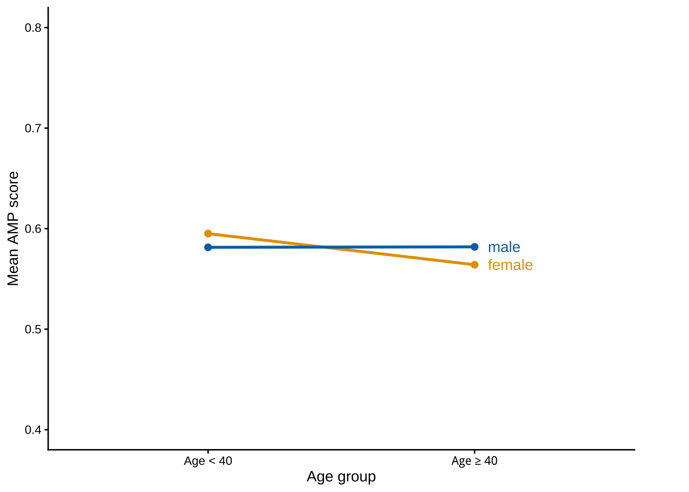
17.7.6 Change over time
Line plots, using geom_line(), show change over time or across repeated measurements. With one row per participant per time point (long data, see the Reshaping and pivots chapter), the group aesthetic tells ggplot which points belong to the same participant and should be connected by a line. Thin, transparent lines for each participant, with the means and their 95% confidence intervals on top, show both the individual and the average change:
ggplot(data = dat_empathy, aes(x = timepoint, y = score)) +
geom_line(aes(group = unique_id), alpha = 0.15) +
stat_summary(aes(group = 1), # group = 1 connects the means of all participants
fun = mean,
geom = "line",
linewidth = 1,
color = "darkorange") +
stat_summary(fun.data = mean_cl_normal,
geom = "pointrange",
color = "darkorange") +
labs(title = "Interpersonal Reactivity Index",
x = "Time point",
y = "Score") +
theme_linedraw()17.7.7 Marginal distributions
A scatter plot shows the relationship between two variables, but it can be hard to see the distribution of each variable on its own. The {ggExtra} package’s ggMarginal() adds a histogram, density plot, or box plot of each variable along the edges (margins) of a scatter plot. It takes a finished ggplot as its input:
plot_scatter <- ggplot(dat_likert, aes(x = self_esteem, y = depression)) +
geom_point(alpha = 0.5) +
labs(x = "Self-esteem",
y = "Depression") +
theme_classic()
ggMarginal(plot_scatter, type = "histogram") # also "density", "boxplot", "violin", or "densigram"Because ggMarginal() returns a different type of object, layers can’t be added to its output with +, so finish the scatter plot first. The {ggside} package offers an alternative that works as ordinary {ggplot2} layers, e.g., geom_xsidedensity().
17.8 Plotting the results of models
17.8.1 Coefficient plots
Results of regression models are often shown as coefficient plots: each predictor’s estimate and its confidence interval, with a vertical line at zero, the value of no effect. The estimates go on the x axis and the predictors on the y axis, so that their names can be read horizontally.
First, put the estimates and confidence intervals in a data frame. Here, the continuous variables are standardized with scale() before fitting the model, so that the estimates are on comparable scales:
fit_depression <- dat_likert %>%
mutate(across(c(depression, self_esteem, age), ~ as.numeric(scale(.x)))) %>%
lm(depression ~ self_esteem + age + gender, data = .)
dat_coefficients <- tibble(term = names(coef(fit_depression)),
estimate = coef(fit_depression),
ci_lower = confint(fit_depression)[, 1],
ci_upper = confint(fit_depression)[, 2]) %>%
filter(term != "(Intercept)") %>%
mutate(term = recode(term,
self_esteem = "Self-esteem",
age = "Age",
gendermale = "Gender: male\n(vs. female)",
gendernonbinary = "Gender: non-binary\n(vs. female)"),
# plot the predictors from top to bottom in the order they are in the model
term = fct_rev(fct_inorder(term)))
dat_coefficients| term | estimate | ci_lower | ci_upper |
|---|---|---|---|
| Self-esteem | 0.6960975 | 0.5465877 | 0.8456074 |
| Age | 0.0847686 | -0.0636890 | 0.2332262 |
| Gender: male | |||
| (vs. female) | 0.2289325 | -0.0902178 | 0.5480828 |
| Gender: non-binary | |||
| (vs. female) | 0.3864402 | -0.0301645 | 0.8030450 |
There are several ways to draw the estimates and their intervals: geom_linerange() with geom_point(), geom_pointrange(), which combines the two, and geom_errorbar(), which adds caps to the ends of the intervals. Error bars’ caps add visual weight without adding information, so geom_linerange() or geom_pointrange() are usually cleaner.
plot_linerange <- ggplot(dat_coefficients, aes(x = estimate, y = term)) +
geom_vline(xintercept = 0, linetype = "dashed") +
geom_linerange(aes(xmin = ci_lower, xmax = ci_upper)) +
geom_point(size = 2) +
labs(title = "geom_linerange()\n+ geom_point()",
x = "Standardized estimate (95% CI)",
y = NULL) +
theme_classic()
plot_pointrange <- ggplot(dat_coefficients, aes(x = estimate, y = term)) +
geom_vline(xintercept = 0, linetype = "dashed") +
geom_pointrange(aes(xmin = ci_lower, xmax = ci_upper)) +
labs(title = "geom_pointrange()",
x = "Standardized estimate (95% CI)",
y = NULL) +
theme_classic()
plot_errorbar <- ggplot(dat_coefficients, aes(x = estimate, y = term)) +
geom_vline(xintercept = 0, linetype = "dashed") +
geom_errorbar(aes(xmin = ci_lower, xmax = ci_upper), width = 0.2) +
geom_point(size = 2) +
labs(title = "geom_errorbar()\n+ geom_point()",
x = "Standardized estimate (95% CI)",
y = NULL) +
theme_classic()
plot_linerange + plot_pointrange + plot_errorbarThe {parameters} package’s parameters() function, covered in the Reporting chapter, creates this data frame for many types of model, and its output can be plotted directly with plot().
Forest plots, which show the effect size and confidence interval of each study in a meta-analysis along with the pooled estimate, are a special case of coefficient plots. They can be built in the same way, but meta-analysis packages such as {metafor} (forest()) and {meta} make complete, publication-ready forest plots directly from the fitted model, and are usually the better choice.
17.8.2 Model predictions and confidence bands
Rather than plotting the coefficients, it is often clearer to plot what a model predicts, e.g., the predicted outcome across the range of a predictor, for each group. A confidence band, drawn with geom_ribbon(), shows the uncertainty of the prediction along the whole line, rather than error bars at a few points. geom_ribbon() needs ymin and ymax aesthetics, for the lower and upper limits of the band.
The {marginaleffects} package’s predictions() function calculates the predictions and their confidence intervals for a grid of values that you specify with datagrid():
fit_interaction <- lm(depression ~ self_esteem * gender, data = dat_likert)
dat_predictions <- predictions(fit_interaction,
newdata = datagrid(self_esteem = 10:70,
gender = c("female", "male", "nonbinary"))) %>%
as_tibble()
ggplot(dat_predictions, aes(x = self_esteem, y = estimate, color = gender, fill = gender)) +
geom_ribbon(aes(ymin = conf.low, ymax = conf.high),
alpha = 0.2,
color = NA) + # no outline around the band
geom_line(linewidth = 1) +
labs(x = "Self-esteem",
y = "Predicted depression (95% CI)",
color = "Gender",
fill = "Gender") +
theme_classic(){marginaleffects} also has a shortcut, plot_predictions(), which makes a similar plot in one step and returns a ggplot that can be modified further:
plot_predictions(fit_interaction, condition = c("self_esteem", "gender")) +
labs(x = "Self-esteem",
y = "Predicted depression (95% CI)",
color = "Gender",
fill = "Gender") +
theme_classic()The {ggeffects} package and, for Bayesian models fitted with {brms}, the conditional_effects() function (formerly called marginal_effects()) make similar plots. geom_smooth() also draws a confidence band, but only for a model that it fits itself, with one predictor.
17.8.3 Assumption checks
The assumptions of a model, e.g., that its residuals are normally distributed, are often checked visually, with plots such as Q-Q plots, or plots of residuals against fitted values. You could make these with {ggplot2}, but helper functions do it for you, for many types of model. For example, check_model() from the {performance} package plots the most important checks for a model at once. See the Assumption checks section of the Reporting chapter.
17.9 Overriding aesthetics and data
Aesthetics set in the ggplot() call apply to every geom, but they can be overridden or added to for a specific geom. For example, to add a vertical line at the mean AMP score, the line’s xintercept is set using a separate aes() call for that geom only:
ggplot(data = dat_amp, aes(x = amp_score)) +
geom_histogram(binwidth = 0.1, boundary = 0) +
geom_vline(aes(xintercept = mean(amp_score)), # aes() call that applies to just this geom
linetype = "dotted",
color = "magenta",
linewidth = 1) +
theme_linedraw()The same applies to data: a specific geom can be given its own data using its data = argument. For example, to plot a pre-calculated mean on top of the raw data:
dat_amp_means <- dat_amp %>%
group_by(gender) %>%
summarize(amp_score = mean(amp_score))
ggplot(data = dat_amp, aes(x = gender, y = amp_score)) +
geom_jitter(width = 0.1, height = 0, alpha = 0.4) +
geom_point(data = dat_amp_means, # this geom uses different data
color = "red",
size = 4) +
labs(x = "Gender",
y = "AMP score") +
theme_linedraw()17.10 Visualizing subsets and comparisons
Many studies contain multiple conditions or subsets that you want to compare in your plot. There are several ways to do this.
17.10.1 color aesthetics and dodging
To compare not only men and women, but also the two age groups, we could add ‘age_group’ as the color aesthetic. However, because the groups share the same x axis values, they overlap:
ggplot(data = dat_amp, aes(x = gender, y = amp_score, color = age_group)) +
stat_summary(fun = mean,
geom = "point") +
stat_summary(fun.data = mean_cl_normal,
geom = "linerange") +
labs(title = "Means and their 95% CIs",
x = "Gender",
y = "Mean AMP score",
color = "Age group") +
theme_linedraw()One solution is to change the position of both the points and the lines using position_dodge(), which moves the groups apart by the width.
ggplot(data = dat_amp, aes(x = gender, y = amp_score, color = age_group)) +
stat_summary(fun = mean,
geom = "point",
position = position_dodge(width = 0.4)) +
stat_summary(fun.data = mean_cl_normal,
geom = "linerange",
position = position_dodge(width = 0.4)) +
labs(title = "Means and their 95% CIs",
x = "Gender",
y = "Mean AMP score",
color = "Age group") +
theme_linedraw()17.10.2 Faceting
Another option is to create separate subplots, or facets, for each group with facet_wrap(). This can be a better choice when putting all the groups in one plot makes it hard to read. That isn’t the case here, but let’s compare the two methods anyway:
ggplot(data = dat_amp, aes(x = gender, y = amp_score)) +
stat_summary(fun = mean,
geom = "point") +
stat_summary(fun.data = mean_cl_normal,
geom = "linerange") +
labs(title = "Means and their 95% CIs",
x = "Gender",
y = "Mean AMP score") +
theme_linedraw() +
facet_wrap(~ age_group)If you have two categorical variables to facet by, one across the columns of facets and one across the rows, use facet_grid(rows_variable ~ columns_variable).
By default, every facet has the same axis ranges, which makes the facets easy to compare. If the groups’ values differ so much that this hides the pattern within each facet, facet_wrap(~ group, scales = "free_y") lets each facet have its own y axis range (“free_x” and “free” are also possible). If you do this, say so in the caption, because readers will assume the axes are the same.
17.11 Example of a moderately complex plot
The plot below brings together many of the elements covered so far. The comments explain each part.
plot_1 <-
# data and aesthetics calls
ggplot(data = dat_amp,
aes(x = mean_self_report,
y = amp_score,
color = gender,
shape = gender)) +
# draw lines at the neutral points for both measures
geom_vline(xintercept = 4, linetype = "dotted") +
geom_hline(yintercept = 0.5, linetype = "dotted") +
# draw geoms using the aesthetics (x, y, color and shape)
## points
geom_point() +
## fit lines, in this case a linear model
geom_smooth(method = "lm", alpha = 0.3) +
# adjust axis labels and ranges
scale_x_continuous(name = "Explicit evaluation\n(Self-report)",
breaks = breaks_pretty(n = 7)) +
scale_y_continuous(name = "Implicit evaluation\n(Affect Misattribution Procedure)") +
# apply a theme
theme_linedraw() +
# adjust the title and the names of the legends
labs(title = "Scatter plot with linear regression lines",
color = "Gender",
shape = "Gender") +
# adjust the colors
scale_color_manual(values = c("female" = "#FF69B4",
"male" = "#6495ED"),
labels = c("female" = "Female",
"male" = "Male")) +
# adjust the shapes
scale_shape_manual(values = c("female" = 16,
"male" = 17),
labels = c("female" = "Female",
"male" = "Male")) +
# zoom in to specific x and y ranges without dropping data points
# (using `limits` drops data points, coord_cartesian() does not; see Common errors below)
coord_cartesian(xlim = c(1, 7),
ylim = c(0, 1)) +
# move the legend below the plot
theme(legend.position = "bottom")
# display plot below chunk
plot_1You can add more layers or functions to a saved plot object later, e.g., to override the previous theme with a new one, or to split the plot into facets:
# different theme
plot_1 + theme_barbie()# split the plot across two facets
plot_1 + facet_wrap(~ gender)17.12 Common errors
17.12.1 Using %>% instead of +
Layers are added to a ggplot with +, not the pipe. Using %>% between layers causes an error. The pipe can be used before the ggplot() call, to pass data into it, as in some of the examples above.
ggplot(data = dat_amp, aes(x = amp_score)) %>%
geom_histogram()Error in `geom_histogram()`:
! `mapping` must be created by `aes()`.
✖ You've supplied a <ggplot2::ggplot> object.
ℹ Did you use `%>%` or `|>` instead of `+`?17.12.2 Mapping vs. setting aesthetics
Aesthetics can either be mapped to a variable inside aes(), so that they vary with the data, or set to a fixed value outside aes(). If you put a fixed value inside aes(), ggplot treats it as a variable that has the same value for every row. In the first plot below, the points are not blue, and a legend appears for a variable called “blue”:
# wrong: color is inside aes()
ggplot(data = dat_likert, aes(x = self_esteem, y = depression)) +
geom_point(aes(color = "blue"))# correct: color is outside aes()
ggplot(data = dat_likert, aes(x = self_esteem, y = depression)) +
geom_point(color = "blue")17.12.3 Plotting wide data
ggplot expects one row per observation, with one column for each variable you want to map to an aesthetic. To plot pre and post scores in different colors or facets, the data needs a single ‘score’ column and a single ‘timepoint’ column, i.e., long data. If your data has one column per time point, use pivot_longer() first (see the Reshaping and pivots chapter). Conversely, a scatter plot of pre scores against post scores needs wide data, with one column for each.
17.12.4 Limits vs. coord_cartesian()
Setting an axis’s limits (e.g., with ylim() or scale_y_continuous(limits = )) removes the data outside the limits before plotting, like using filter(). This can change regression lines and other summaries, which are calculated only from the data that is plotted. coord_cartesian() instead zooms the plot in or out to the specified coordinates, without removing any data. Notice how the slope of the regression line changes in the second plot below, but not the third.
ggplot(data = dat_amp, aes(x = mean_self_report, y = amp_score)) +
geom_point() +
geom_smooth(method = "lm") +
labs(title = "All data")ggplot(data = dat_amp, aes(x = mean_self_report, y = amp_score)) +
geom_point() +
geom_smooth(method = "lm") +
ylim(0, 0.5) +
labs(title = "ylim() removes data")ggplot(data = dat_amp, aes(x = mean_self_report, y = amp_score)) +
geom_point() +
geom_smooth(method = "lm") +
coord_cartesian(ylim = c(0, 0.5)) +
labs(title = "coord_cartesian() zooms in")17.13 Combining plots
Sometimes you want to combine several plots, each made with a separate ggplot call, into one figure. Doing this in R, rather than in an image editor, keeps the figure reproducible. The {patchwork} package combines plots with +, | (side by side), and / (one above the other).
plot_all <- dat_amp %>%
ggplot(aes(x = mean_self_report, y = amp_score)) +
geom_point() +
geom_smooth(method = "lm") +
ggtitle("All")
plot_women <- dat_amp %>%
filter(gender == "female") %>%
ggplot(aes(x = mean_self_report, y = amp_score)) +
geom_point() +
geom_smooth(method = "lm") +
ggtitle("Women")
plot_men <- dat_amp %>%
filter(gender == "male") %>%
ggplot(aes(x = mean_self_report, y = amp_score)) +
geom_point() +
geom_smooth(method = "lm") +
ggtitle("Men")
# combine these plots with different arrangements
plot_women + plot_menplot_women + plot_men + plot_layout(ncol = 1)plot_all / (plot_women + plot_men)plot_layout() also controls the relative sizes of the plots, e.g., plot_layout(heights = c(1, 2)) makes the second row twice as tall as the first. plot_annotation(tag_levels = "A") labels the plots A, B, C, etc., as is common in articles.
17.14 Saving plots
ggsave() saves a plot to disk. Its file type is set by the file name’s extension.
# save as a pdf
ggsave(plot = plot_1,
filename = "plots/plot_1.pdf",
width = 6,
height = 5)
# save as a png
ggsave(plot = plot_1,
filename = "plots/plot_1.png",
width = 6,
height = 5,
units = "in",
dpi = 300)- Vector formats such as .pdf and .svg can be enlarged without losing quality, and are often preferred by journals.
- Image formats such as .png are made of pixels, so set a high enough resolution (
dpi), e.g., 300 dots per inch, for them to look sharp. - Always set the
widthandheight. Otherwise, the size depends on the size of the plot window in RStudio when the code was run, so the saved plot looks different each time. - The size of the text is fixed relative to these dimensions: the same plot saved at a smaller size has relatively larger text. If the text is too small or large, change the
widthandheight, or the text size intheme().
The size of plots shown in the rendered .html file below each chunk is set separately, with the fig-width and fig-height chunk options (in inches), e.g., #| fig-width: 6.
17.15 Key functions
The main functions covered in this chapter:
| Function | Package | What it does |
|---|---|---|
ggplot() |
{ggplot2} | Creates a plot from a data frame, with default aesthetic mappings. |
aes() |
{ggplot2} | Maps variables to aesthetics, e.g., x, y, color, fill, shape, group. |
geom_point(), geom_jitter() |
{ggplot2} | Plot points, e.g., for scatter plots. geom_jitter() moves each point by a small random amount. |
geom_smooth() |
{ggplot2} | Adds a fitted line, e.g., a linear regression line with method = "lm". |
geom_histogram(), geom_density() |
{ggplot2} | Plot the distribution of a continuous variable. |
geom_bar(), geom_col() |
{ggplot2} | Plot bars: geom_bar() counts the rows in each category, geom_col() plots values in the data. |
geom_boxplot(), geom_violin() |
{ggplot2} | Plot the distribution of a continuous variable in each group. |
geom_line() |
{ggplot2} | Connects points with lines, e.g., to show change over time. |
geom_hline(), geom_vline(), annotate() |
{ggplot2} | Add reference lines and annotations. |
stat_summary() |
{ggplot2} | Calculates and plots summary statistics, e.g., means and 95% CIs. |
geom_rain() |
{ggrain} | Creates raincloud plots. |
stat_halfeye(), stat_dots() |
{ggdist} | Plot densities and dot plots of distributions, e.g., for raincloud plots. |
geom_abline() |
{ggplot2} | Adds a diagonal line, e.g., the no-change line in a Brinley plot. |
geom_tile() |
{ggplot2} | Draws a grid of colored tiles, e.g., for heatmaps. |
geom_linerange(), geom_pointrange(), geom_errorbar() |
{ggplot2} | Plot intervals, e.g., confidence intervals in coefficient plots. |
geom_ribbon() |
{ggplot2} | Draws a band between ymin and ymax, e.g., a confidence band. |
geom_text(), geom_label() |
{ggplot2} | Add text labels from a column in the data. |
geom_text_repel(), geom_label_repel() |
{ggrepel} | Add text labels that don’t overlap. |
ggMarginal() |
{ggExtra} | Adds the marginal distributions of each variable to a scatter plot. |
predictions(), datagrid(), plot_predictions() |
{marginaleffects} | Calculate and plot a model’s predictions and their confidence intervals. |
scale_x_continuous(), scale_y_continuous(), scale_x_discrete() |
{ggplot2} | Control axis names, breaks, labels, and limits. |
scale_x_log10(), scale_y_log10() |
{ggplot2} | Plot an axis on a logarithmic scale. |
label_percent(), label_comma(), label_wrap() |
{scales} | Format axis labels as percentages, with commas, or wrapped over several lines. |
expansion() |
{ggplot2} | Sets the space added at the ends of an axis. |
guides() |
{ggplot2} | Controls or removes legends, e.g., guides(color = "none"). |
scale_color_viridis_d(), scale_fill_brewer(), scale_color_manual(), etc. |
{ggplot2} | Control the colors used for the color and fill aesthetics. |
labs() |
{ggplot2} | Sets the title, subtitle, caption, and the names of axes and legends. |
theme_linedraw(), theme_minimal(), etc. |
{ggplot2} | Apply a complete theme. |
theme() |
{ggplot2} | Adjusts individual theme elements, e.g., text size and legend position. |
theme_set() |
{ggplot2} | Sets the default theme for all plots that follow. |
facet_wrap(), facet_grid() |
{ggplot2} | Split a plot into subplots for each group. |
position_dodge() |
{ggplot2} | Moves overlapping groups apart. |
position_jitterdodge() |
{ggplot2} | Jitters points and moves groups apart at the same time. |
position_nudge() |
{ggplot2} | Moves a layer by a fixed amount, e.g., to place summaries next to raw data. |
coord_cartesian() |
{ggplot2} | Zooms in or out without removing data. |
coord_flip() |
{ggplot2} | Swaps the x and y axes. |
coord_equal(), coord_fixed() |
{ggplot2} | Set the ratio between the units on the x and y axes, e.g., so that a 45° line means equal values. |
fct_infreq(), fct_relevel(), fct_reorder() |
{forcats} | Change the order of categories. |
+, |, /, plot_layout() |
{patchwork} | Combine several plots into one figure. |
ggsave() |
{ggplot2} | Saves a plot to disk. |
17.16 Exercises
Check your learning with the following questions. Exercises that involve running code should be done in your local copy of this chapter’s .qmd file (see the Introduction for how to get a copy).
17.16.1 Check your understanding
Answer the questions, then click the button at the bottom to check your answers.
- The layers of a ggplot are combined with
%>%. - You want the color of the points to depend on each participant’s gender. Which code does this?
- Which geom counts the number of rows in each category of a categorical variable?
- Using
ylim()to zoom in on part of a plot can change the slope of a regression line drawn withgeom_smooth(). - Changing the bin width of a histogram can change the apparent shape of the distribution.
- Which function saves a plot to disk?
- In a Brinley plot of pre scores (x axis) against post scores (y axis), points above the diagonal line are participants whose scores increased.
- You add jittered raw data to an interaction plot whose means are dodged. Which position function lines the points up with their groups?
- Which geom draws a confidence band around a line?
NoteClick to show explanations
- False. Layers are added with
+. The pipe can be used to pass data intoggplot(), but not between layers. geom_point(aes(color = gender)). Mapping a variable to an aesthetic must be done insideaes(). Outsideaes(),colormust be a fixed value, such as “blue”.aes(color = "gender")treats the text “gender” as a constant, so all points would be the same color.geom_bar().geom_col()plots values that are already in the data, e.g., pre-calculated means, andgeom_histogram()bins a continuous variable.- True.
ylim()removes the data outside the limits before the regression line is calculated.coord_cartesian(ylim = )zooms in without removing data. - True. No single bin width is correct, so it’s worth trying several before choosing one.
ggsave(). Set itswidthandheightso that the saved plot has the same size each time.- True. The diagonal shows where scores would be if they didn’t change, so points above it have higher post scores than pre scores.
coord_equal()and identical axis limits keep the line at 45°. position_jitterdodge().position_jitter()doesn’t move the groups apart, andposition_dodge()doesn’t jitter the points.geom_ribbon(), with itsyminandymaxaesthetics set to the lower and upper limits of the interval.
Why are bar plots of means discouraged? What could you use instead?
NoteClick to show answer
Bar plots of means hide the distribution of the data and the sample size, and the bars imply that the data starts at zero and fills the bar. Very different datasets can produce the same bar plot. Better options show the distribution and the raw data as well as the means, e.g., box plots or violin plots with jittered points, or raincloud plots, and add the means and their confidence intervals with stat_summary().
When would you use faceting rather than color to compare groups in a plot?
NoteClick to show answer
Color puts all the groups in one plot, which makes direct comparisons easy when there are few groups and they don’t overlap too much. Faceting puts each group in its own subplot, which is clearer when there are many groups, or when the groups overlap so much that a single plot would be hard to read (overplotting). The two can also be combined, e.g., color for one grouping variable and facets for another.
17.16.2 Practice
In your local copy of this chapter’s .qmd file, complete the tasks below. No solutions are provided for these tasks, to reduce the temptation to peek or copy-paste. Use the hints if you get stuck.
Using the dat_empathy data frame, create the following plots:
- Plot 1: Create a density plot of the IRI scores, using different colors for the two time points. Clean up the axes, theme, colors, etc.
- Plot 2: Wrangle the data to a wider format. Create a scatter plot with a linear regression line that predicts IRI scores at post from IRI scores at pre. Clean up the axes, theme, colors, etc.
- Combine both plots into one figure using the {patchwork} package. The density plot should be above the scatter plot, and only half its height.
- Save the figure to disk as both a .pdf and a .png using
ggsave(). Set the height and width of the saved plots, and of the plots shown below the chunk, so that their proportions are reasonable.
NoteClick to show hint
- Plot 1: map ‘timepoint’ to
filland usegeom_density()withalphabelow 1, so that both distributions can be seen. - Plot 2: use
pivot_wider()withnames_from = timepointandvalues_from = score. Remove the ‘scale’ column first, if needed. Participants without post scores will haveNA, and are dropped from the plot with a warning. - Combine the plots with
/, and set their relative heights withplot_layout(heights = c(1, 2)). - Use the
#| fig-width:and#| fig-height:chunk options for the plot below the chunk, and thewidthandheightarguments ofggsave()for the saved files.